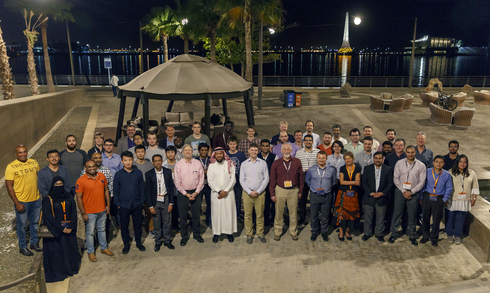

October 4, 2019
NeurIPS 2019 Workshop Papers
We have had several papers accepted to various NeurIPS 2019 workshops. Here they are:
Workshop on Federated Learning for Data Privacy and Confidentiality
1. Gradient Descent with Compressed Iterates, by Ahmed Khaled and me2. Better Communication Complexity for Local SGD, by Ahmed Khaled, Konstantin Mishchenko and me
3. First Analysis of Local GD on Heterogeneous Data, by Ahmed Khaled, Konstantin Mishchenko and me
Beyond First Order Methods in ML
4. Stochastic Newton and Cubic Newton Methods with Simple Local Linear-Quadratic Rates, by Dmitry Kovalev, Konstantin Mishchenko and me5. An Accelerated Method for Derivative-Free Smooth Stochastic Convex Optimization, by Eduard Gorbunov, Pavel Dvurechensky and Alexander Gasnikov
Optimization Foundations for Reinforcement Learning
6. A Stochastic Derivative Free Optimization Method with Momentum, by Eduard Gorbunov, Adel Bibi, Ozan Sener, El Houcine Bergou and meOptimal Transport & Machine Learning
7. Sinkhorn Algorithm as a Special Case of Stochastic Mirror Descent, by Konstantin MishchenkoSmooth Games Optimization and Machine Learning Workshop: Bridging Game Theory and Deep Learning
8. Revisiting Stochastic Extragradient, by Konstantin Mishchenko, Dmitry Kovalev, Egor Shulgin, me, and Yura MalitskyOctober 3, 2019
Best Paper Award at VMV 2019
The paper "Stochastic convolutional sparse coding", joint work with Jinhui Xiong and Wolfgang Heidrich, has won the 2019 Vision, Modeling and Visualization (VMV) Best Paper Award.
October 1, 2019
New Postdoc: Mher Safaryan
Mher Safaryan joined my group today as a postdoc. He got his PhD in 2018 in Mathematics at Yerevan State University, Armenia, under the supervision of Grigori Karagulyan. During his PhD, Mher worked on several problems in harmonic analysis and algebra. Mher and me have recently written a paper on stochastic sign descent methods.
Welcome!
September 29, 2019
Nizhny Novgorod
I just took a 1hr flight from Moscow to Nizhny Novgorod. I will stay here until October 3 and deliver four lectures: three lectures on Oct 1 at "Approximation and Data Analysis" (an event organized by Moscow State University, Higher School of Economics and Russian Academy of Sciences), and one lecture on Oct 2 at Huawei.
September 26, 2019
MIPT
After a couple days in Germany, I am now traveling to Moscow to visit Moscow Institute of Physics and Technology (MIPT). Indeed, I am writing this onboard a flight from Frankfurt to Domodedovo. Eduard will pick me up at the airport. Thanks Eduard!
Alexander Gasnikov put together a nice workshop around my visit, with excellent speakers: V. Spokoiny, E. Tyrtyshnikov, A. Nazin, P. Dvurechensky, and A. Tremba. The workshop will start at 2pm on the 27th of September and will take place somewhere at MIPT. I do not know where yet - as there is no website for the event and I was not yet informed - but I am sure I will learn about this before the workshop starts ;-)
The day after, on September 28th, I will deliver a series of lectures for MIPT students entitled "A Guided Walk Through the ZOO of Stochastic Gradient Descent Methods". This mini-course is aimed to serve as the best introduction to the topic of SGD, and is largely based on research originating from my group at KAUST. We will start at 10:45am and finish at 6pm. And yes, there will be breaks.
Update (Sept 29): My visit of MIPT is over, today I will fly to Nizhny Novgorod. My mini-course was recorded and should appear on YouTube at some point. There might have been an issue with voice recording towards the end though...
September 24, 2019
Bielefeld
I am on my way to Bielefeld to give a talk at a numerical analysis workshop associated with the celebrations of 50 years of mathematics at Bielefeld. I normally do not have a chance to hang out with numerical PDE people; but I am glad I did. It was a fun event. Moreover, my rather esoteric talk (relative to the workshop theme) on stochastic Newton and gradient methods was met with surprising enthusiasm.
September 15, 2019
KAUST Professor Wins Distinguished Speaker Award
KAUST wrote a short article about me...
September 15, 2019
Heading to DIMACS
I am on my way to Rutgers, to attend the DIMACS Workshop on Randomized Numerical Linear Algebra, Statistics, and Optimization, which is to take place at the Center for Discrete Mathematics and Computer Science (DIMACS) during September 16-18, 2019.
My talk, entitled "Variance Reduction for Gradient Compression", is on Monday afternoon. The talk will be recorded and put on YouTube.
Abstract: Over the past few years, various randomized gradient compression (e.g., quantization, sparsification, sketching) techniques have been proposed for reducing communication in distributed training of very large machine learning models. However, despite high level of research activity in this area, surprisingly little is known about how such compression techniques should properly interact with first order optimization algorithms. For instance, randomized compression increases the variance of the stochastic gradient estimator, and this has an adverse effect on convergence speed. While a number of variance-reduction techniques exists for taming the variance of stochastic gradients arising from sub-sampling in finite-sum optimization problems, no variance reduction techniques exist for taming the variance introduced by gradient compression. Further, gradient compression techniques are invariably applied to unconstrained problems, and it is not known whether and how they could be applied to solve constrained or proximal problems. In this talk I will give positive resolutions to both of these problems. In particular, I will show how one can design fast variance-reduced proximal stochastic gradient descent methods in settings where stochasticity comes from gradient compression.
This talk is based on:
[1] Filip Hanzely, Konstantin Mishchenko and Peter Richtárik. SEGA: Variance reduction via gradient sketching, NeurIPS 2018
[2] Konstantin Mishchenko, Eduard Gorbunov, Martin Takáč and Peter Richtárik. Distributed learning with compressed gradient differences, arXiv:1901.09269, 2019
[3] Konstantin Mishchenko, Filip Hanzely and Peter Richtárik. 99% of distributed optimization is a waste of time: the issue and how to fix it, arXiv:1901.09437, 2019
[4] Samuel Horváth, Dmitry Kovalev, Konstantin Mishchenko, Peter Richtárik and Sebastian Stich. Stochastic distributed learning with gradient quantization and variance reduction, arXiv:1904.05115, 2019
Update (September 16, 2019): I have given my talk today, here are the slides.
Update (October 4, 2019): My talk is on YouTube now. Here is a playlist of all the other talks from the event.
September 12, 2019
Sciencetown Podcast
Today, I spent about an hour in Nicholas Demille's podcast studio. We have chatted about machine learning, life and and my work for about an hour. The material will be used for the next episode of the Sciencetown podcast Nicholas is preparing.
September 12, 2019
Nicolas Loizou's PhD Thesis
Here is a copy of Nicolas' PhD thesis entitled "Randomized Iterative Methods for Linear Systems: Momentum,
Inexactness and Gossip". Nicolas defended in June, and has just arrived to Montréal to take up a postdoctoral position at MILA.
September 10, 2019
New Paper
New paper out: "Better communication complexity for local SGD" - joint work with Ahmed Khaled and Konstantin Mishchenko.
Abstract: We revisit the local Stochastic Gradient Descent (local SGD) method and prove new convergence rates. We close the gap in the theory by showing that it works under unbounded gradients and extend its convergence to weakly convex functions. Furthermore, by changing the assumptions, we manage to get new bounds that explain in what regimes local SGD is faster that its non-local version. For instance, if the objective is strongly convex, we show that, up to constants, it is sufficient to synchronize $M$ times in total, where $M$ is the number of nodes. This improves upon the known requirement of Stich (2018) of $\sqrt{TM}$ synchronization times in total, where $T$ is the total number of iterations, which helps to explain the empirical success of local SGD.
September 10, 2019
New Paper
New paper out: "Gradient descent with compressed iterates" - joint work with Ahmed Khaled.
Abstract: We propose and analyze a new type of stochastic first order method: gradient descent with compressed iterates (GDCI). GDCI in each iteration first compresses the current iterate using a lossy randomized compression technique, and subsequently takes a gradient step. This method is a distillation of a key ingredient in the current practice of federated learning, where a model needs to be compressed by a mobile device before it is sent back to a server for aggregation. Our analysis provides a step towards closing the gap between the theory and practice of federated learning, and opens the possibility for many extensions.
September 10, 2019
New Paper
New paper out: "First analysis of local GD on heterogeneous data" - joint work with Ahmed Khaled and Konstantin Mishchenko.
Abstract: We provide the first convergence analysis of local gradient descent for minimizing the average of smooth and convex but otherwise arbitrary functions. Problems of this form and local gradient descent as a solution method are of importance in federated learning, where each function is based on private data stored by a user on a mobile device, and the data of different users can be arbitrarily heterogeneous. We show that in a low accuracy regime, the method has the same communication complexity as gradient descent.
September 7, 2019
New Visitor: Xiuxian Li
Xiuxian Li (Nanyang Technological University, Singapore) is visiting me at KAUST for a week. He is giving a CS seminar talk on Monday at noon entitled "Distributed Algorithms for Computing a Common Fixed Point of a Group of Nonexpansive Operators".
September 4, 2019
Three Papers Accepted to NeurIPS 2019
The long-awaited decisions just came. We've had three papers accepted; I was involved with the first two of them. The third is a collaboration of Adil Salim with people from Gatsby:
"RSN: Randomized Subspace Newton" - joint work with Robert Mansel Gower, Dmitry Kovalev and Felix Lieder.
Abstract: We develop a randomized Newton method capable of solving learning problems with huge dimensional feature spaces, which is a common setting in applications such as medical imaging, genomics and seismology. Our method leverages randomized sketching in a new way, by finding the Newton direction constrained to the space spanned by a random sketch. We develop a simple global linear convergence theory that holds for practically all sketching techniques, which gives the practitioners the freedom to design custom sketching approaches suitable for particular applications. We perform numerical experiments which demonstrate the efficiency of our method as compared to accelerated gradient descent and the full Newton method. Our method can be seen as a refinement and randomized extension of the results of Karimireddy, Stich, and Jaggi (2019).
"Stochastic proximal Langevin algorithm: potential splitting and nonasymptotic rates" - joint work with Adil Salim and Dmitry Kovalev.
Abstract: We propose a new algorithm---Stochastic Proximal Langevin Algorithm (SPLA)---for sampling from a log concave distribution. Our method is a generalization of the Langevin algorithm to potentials expressed as the sum of one stochastic smooth term and multiple stochastic nonsmooth terms. In each iteration, our splitting technique only requires access to a stochastic gradient of the smooth term and a stochastic proximal operator for each of the nonsmooth terms. We establish nonasymptotic sublinear and linear convergence rates under convexity and strong convexity of the smooth term, respectively, expressed in terms of the KL divergence and Wasserstein distance. We illustrate the efficiency of our sampling technique through numerical simulations on a Bayesian learning task.
"Maximum mean discrepancy gradient flow" - work of Michael Arbel, Anna Korba, Adil Salim and Arthur Gretton.
Abstract: We construct a Wasserstein gradient flow of the maximum mean discrepancy (MMD) and study its convergence properties. The MMD is an integral probability metric defined for a reproducing kernel Hilbert space (RKHS), and serves as a metric on probability measures for a sufficiently rich RKHS. We obtain conditions for convergence of the gradient flow towards a global optimum, that can be related to particle transport when optimizing neural networks. We also propose a way to regularize this MMD flow, based on an injection of noise in the gradient. This algorithmic fix comes with theoretical and empirical evidence. The practical implementation of the flow is straightforward, since both the MMD and its gradient have simple closed-form expressions, which can be easily estimated with samples.
September 4, 2019
Best NeurIPS 2019 Reviewer Award
I have received the following email: "Thank you for all your hard work reviewing for NeurIPS 2019! We are delighted to inform you that you were one of the 400 highest-scoring reviewers this year! You will therefore be given access (for a limited period of time) to one free registration to this year’s conference; you will later receive additional information by email explaining how to access your registration." Thanks NeurIPS!
Update: Konstantin Mishchenko also got this award. Congrats!
September 3, 2019
New Postdoc: Zhize Li
Zhize Li joined my group today as a postdoc. He got his PhD in Computer Science from Tsinghua University in July 2019, and is interested in "theoretical computer science and machine learning, in particular (non-)convex optimization algorithms, machine learning, algorithms and data structures". His PhD thesis "Simple and Fast Optimization Methods for Machine Learning" won the 2019 Tsinghua Outstanding Doctoral Dissertation Award.
Zhize has written 12 papers, including publications in venues such as NeurIPS, ICLR, COLT, IJCAI, SAGT, DCC and SPIRE.
Welcome!
August 29, 2019
New Paper
New paper out: "Stochastic convolutional sparse coding" - joint work with Jinhui Xiong and Wolfgang Heidrich.
Abstract: State-of-the-art methods for Convolutional Sparse Coding usually employ Fourier-domain solvers in order to speed up the convolution operators. However, this approach is not without shortcomings. For example, Fourier-domain representations implicitly assume circular boundary conditions and make it hard to fully exploit the sparsity of the problem as well as the small spatial support of the filters. In this work, we propose a novel stochastic spatial-domain solver, in which a randomized subsampling strategy is introduced during the learning of sparse codes. Afterwards, we extend the proposed strategy in conjunction with online learning, scaling the CSC model up to very large sample sizes. In both cases, we show experimentally that the proposed subsampling strategy, with a reasonable selection of the subsampling rate, outperforms the state-of-the-art frequency-domain solvers in terms of execution time without losing in learning quality. Finally, we evaluate the effectiveness of the over-complete dictionary learned from large-scale datasets, which demonstrates an improved sparse representation of the natural images on account of more abundant learned image features.
The paper was accepted to and will appear in the International Symposium on Vision, Modeling, and Visualization 2019 (VMV 2019).
August 25, 2019
Fall 2019 Semester Started
The Fall 2019 semester has just started and I am again teaching CS 390FF: Special Topics in Data Sciences (Big Data Optimization). I have redesigned some key portions of the course based on some fresh and hot research from 2018 and 2019. You can sign up for the course via Piazza.
August 22, 2019
New MS/PhD Student: Alyazeed Basyoni
Alyazeed Basyoni just arrived at KAUST to start his MS/PhD studies under my supervision. Welcome!!!
In 2019, Alyazeed obtained his BS in Computer Science from Carnegie Mellon University. Desiting to learn more, Alyazeed ended up taking many graduate level courses, inlcuding courses in Probability Theory, Deep Reinforcement Learning, Convex Optimization, Machine Learning, Randomized Algorithms, Probabilistic Combinatorics, and Measure and Integration.
Alyazeed already has varied industrial experience:
- At Ansatz, he implemented a fast, low cost, futures execution engine (it was deployed)
- At Dropbox, he implemented a tool that allows clients to search, preview, select and embed content from third-party providers into Paper.
- At Petuum, he contributed to the open source Dynamic Neural Network package, DyNet.
When Alyazeed is bored, he writes OS kernels (in C, from scratch), helps the USA mathematics olympiad team by grading mock exams and delivering short lectures, programs games, and fools around with C, Python, SML, OCaml, and Go.
Alyazeed has a Silver Medal from the 53rd International Mathematics Olympiad (held in Mar del Plata, Argentina in 2012), where he represented Saudi Arabia. By the way, at the same Olympiad, my student Alibek Sailanbayev got a Bronze Medal. What a coincidence! Alyazeed was the first Saudi to win a Silver medal at IMO.
At KAUST, you will find Alyazeed in Building 1, Level 2.
August 22, 2019
New MS/PhD Student: Slavomír Hanzely
Slavomír Hanzely just arrived at KAUST to start his MS/PhD studies under my supervision. Welcome!!!
In 2019, Slavomír ("Slavo") obtained his BS degree in Computer Science from Comenius University, Slovakia. This, by the way, is also where I studied back in the day. Slavo was eager to learn faster than the study program required, and ended up taking many more courses than necessary - all without sacrificing his grades.
Throughout his high schools and university studies, Slavo has been active in various mathematical and computer science olympiads and competitions, at regional, national and international level. Here are some highlights from his achievements:
- 2017, 8-10th Place in Vojtech Jarník International Mathematical Competition (1st place among Czech and Slovak contestants)
- 2016, represented Slovakia at the 57th International Mathematical Olympiad (held in Hong Kong)
- 2016, 3rd Place at the Slovak National Mathematical Olympiad
- 2016, 1st Place at Slovak Mathematical Olympiad, Regional Round
- 2016, 1st Place at Slovak Informatics Olympiad, Regional Round
- 2015, Bronze Medal, Middle European Mathematical Olympiad
- 2015, 2nd Place at Slovak Informatics Olympiad, Regional Round
- 2014, 1st Place at Slovak Mathematical Olympiad, Regional Round
- 2013, 1st Place at Slovak Mathematical Olympiad, Regional Round
Slavo has been active with marking solutions for the Slovak National Mathematical Olympiad, preparing the Slovak team for the International Mathematical Olympiad, marking solutions of various correspondence contests in mathematics and computer science, and organizing summer camps for highly talented Slovak pupils in mathematics and computer science.
At KAUST, you will find Slavo in Building 1, Level 2.
Disambiguation: Slavo's older brother Filip is also at KAUST, studying towards his PhD in my group.
August 21, 2019
2 Interviews in 1 Day
I have been interviewed twice today. First by David Murphy for a KAUST article related to the "Distinguished Speaker Award" I received at ICCOPT earlier this month, and then by Ľubica Hargašová (who was kind enough to travel to meet me) for her RTVS (Slovak Radio and Television) radio show "Naši a Svetoví" ("Ours and of the World") about Slovaks who found success abroad. The former interview will lead to a written piece (in English), while the latter interview was recorded and should air at some point in September (in Slovak).
[By the way - I was officially on vacation today...]
Update (September 7, 2019): A (short compilation from) the interview aired today at Radio Slovensko. The recording can be listened to online.
August 11, 2019
2 Postdoc Positions
I have two postdoc positions open in the area of optimization and/or machine learning, to be filled by January 2020. If interested, send me an email! Include your CV and explain why you are interested.
Application deadline: no deadline; positions will be open until filled
Position start: By January 2020
Duration: 1 to 3 years (based on agreement)
Conditions: Very competitive salary and benefits; Travel funding and access to state-of-the-art facilities; On-campus accommodation. The KAUST campus is home of around 7,000 people, and comprises a land area of 36 km2. Includes restaurants, schools, shops, cinema, two private beaches, recreation centers, supermarket, medical center, etc.
Application process: Send an email to me (peter dot richtarik at kaust dot edu dot sa), explain why you are interested in the position, and enclose your CV. If your CV catches my attention, I may ask for reference letters and extra materials. Alternatively, you may instruct your letter writers to send letters to me (by email) right away. Shortlisted candidates will progress to a Skype interview.
August 8, 2019
My Group @ ICCOPT
Many members of my (combined KAUST-Edinburgh-MIPT) group attended ICCOPT. Here is info on their talks plus links to the underlying papers and slides (if available):
- Adil Salim
- paper "Stochastic Proximal Langevin Algorithm: Potential Splitting and Nonasymptotic Rates"
- Xun Qian
- paper "SGD: General Analysis and Improved Rates", ICML 2019
- [slides]
- Nicolas Loizou
- paper "Stochastic Gradient Push for Distributed Deep Learning", ICML 2019
- [slides]
- Konstantin Mishchenko
- paper "A Stochastic Decoupling Method for Minimizing the Sum of Smooth and Non-smooth Functions"
- [slides]
- Samuel Horváth
- paper "Stochastic Distributed Learning with Gradient Quantization and Variance Reduction"
- Dmitry Kovalev
- paper "Revisiting Stochastic Extragradient"
- [slides]
- Elnur Gasanov
- Dmitry Kamzolov
- talk "Composite High-Order Method for Convex Optimization"
- Egor Shulgin (attended the Summer School and the conference)
- Igor Sokolov (attended the Summer School and the conference)
- Peter Richtárik
- paper "SEGA: Variance Reduction via Gradient Sketching", NeurIPS 2018
- [slides]
Several former members of my KAUST and Edinburgh groups attended as well:
- Aritra Dutta
- paper "Weighted Singular Value Thresholding and its Application to Background Estimation"
- Martin Takáč
- paper "Quasi-Newton Methods for Deep Learning: Forget the Past, Just Sample"
- Robert Gower
- talk "Expected Smoothness is the Key to Understanding the Mini-batch Complexity of Stochastic Gradient Methods"
- [paper 1 (JacSketch)] [paper 2 (SGD)] [paper 3 (SVRG)]
- [slides]
- Zheng Qu
- talk: "Adaptive Primal-Dual Coordinate Descent Methods for Non-smooth Composite Minimization with Linear Operator"
- Rachael Tappenden
- talk "Underestimate Sequences via Quadratic Averaging"
- Jakub Mareček
- talk: "Time-varying Non-convex Optimisation: Three Case Studies"
It's 18 people in total (and I am not counting students/postdocs of my former students)! We had a distinct presence, and most importantly, had fun at the event!
August 3, 2019
ICCOPT Summer School Slides
My ICCOPT summer school course slides are here:

Here are supplementary (flashy Powerpoint) slides about SGD-SR and SEGA.
I was pleasantly surprised to have received a "distinguished speaker" award:

The bear probably represents the speed with which I delivered the lectures... ;-)
Update (September 15, 2019): KAUST wrote a short article about this, and other things...
July 30, 2019
On my way to Berlin for ICCOPT
I am on my way to Berlin to first teach in the ICCOPT Summer School, and then to attend the ICCOPT conference. On August 3rd I will deliver a 1 day (4 x 1.5 hours) short course entitled "A Guided Walk Through the ZOO of Stochastic Gradient Descent Methods". Here is what the course is going to be about:
Stochastic gradient descent (SGD) in one of its many variants is the workhorse method for training modern supervised machine learning models. However, the world of SGD methods is vast and expanding, which makes it hard to understand its landscape and inhabitants. In this tutorial I will offer a guided walk through the ZOO of SGD methods. I will chart the landscape of this beautiful world, and make it easier to understand its inhabitants and their properties. In particular, I will introduce a unified analysis of a large family of variants of proximal stochastic gradient descent (SGD) which so far have required different intuitions, convergence analyses, have different applications, and which have been developed separately in various communities. This framework includes methods with and without the following tricks, and their combinations: variance reduction, data sampling, coordinate sampling, importance sampling, mini-batching and quantization. As a by-product, the presented framework offers the first unified theory of SGD and randomized coordinate descent (RCD) methods, the first unified theory of variance reduced and non-variance-reduced SGD methods, and the first unified theory of quantized and non-quantized methods.
July 25, 2019
NeurIPS Reviews Arrived
NeurIPS reviews came in. As usual, most reviewers assigned to evaluate my papers are not quite at home in my area, or simply provide an educated guess only. This leads to many rather meaningless and noisy reviews (this is in sharp contrast with journal submissions in top journals where more often than not the reviewers are knowledgeable). This is something that took me some time to get used to back in the day... The reason for this? A trade-off between the quality of the reviews and the speed of the accept/reject decision. Thanks to the few reviewers who actually understood our results and were able to provide useful feedback! Now we have until July 31 to prepare author response, aka a "rebuttal".
An interesting innovation this year: a system was put in place to automatically flag some papers with a common subset of authors as potentially being a "dual submission". A dual submission is essentially a single set of results presented as two (usually slightly) different papers, which is a trick aimed to increase chances of acceptance. When incentives are high, people are inventive... Some of my work got flagged this way, and incorrectly so. The problem I can see right away is that some reviewers, already busy with many reviews and other tasks, apparently consider this as a convenient excuse to spend less time reviewing and simply taking the flag at face value, which allows them to simply claim dual submission without providing any supporting evidence. Do we really want AI to do reviews for us as well? No, we do not! This is a big danger to the serious researchers in the community; and it is not at all clear to me whether this issue was considered before the system was launched. Do the benefits outweigh the costs? People like me who would never think of a dual submission will be on the losing side. This would not have to happen if the reviewers took their job seriously and evaluated the papers properly. But perhaps this new system will eliminate some of the genuine dual submissions - and I have seen some in the past. What's worse, we are now forced to compare the two papers flagged as potentially dual submission in the rebuttal. This on its own is a great idea - but not delivered correctly because no extra space is given to write the author response. We already have just a single page to respond, which I never found to be enough. Now, there is even less space to respond to the actual review comments - which almost by definition will lead to such papers to be rejected. After all, the reviewer will not get a response to all criticism, and will interpret this in the obvious way. To sum this up: I am not happy with this new system, and the community should not be either.
July 19, 2019
Konstantin @ Stanford
Konstantin is visiting Stephen Boyd at Stanford.
July 15, 2019
Konstantin @ Frontiers of Deep Learning
Konstantin is attending the Simons Institute (Berkeley) workshop Frontiers of Deep Learning. The schedule and videos of the talks will become available here.
July 14, 2019
ICIAM 2019 - Valencia, Spain
I am attending ICIAM 2019, the largest scientific meeting of industrial and applied mathematicians taking place once every four years. I am giving a 30 min talk on Wednesday in an invited session on optimization (11am-1pm). I will be leaving Valencia on Saturday.
July 13, 2019
Accelerating the Grapevine Effect
My recent work with Nicolas Loizou on randomized gossip algorithms is featured in the KAUST Discovery magazine. You can read the article online here.
July 11, 2019
Martin Takáč Giving a Talk in Bratislava
Today, my former PhD student Martin Takáč (and now an Assistant Professor at Lehigh University, USA) is giving a popular science talk in Bratislava, Slovakia. The talk is entitled: "Current trends in big data and artificial intelligence". I understand the talk will be delivered in Slovak language.

July 9, 2019
Filip @ Google
Filip Hanzely started a research internship at Google, New York. He will be back at KAUST in early October.
July 6, 2019
Nature index: KAUST #52 Globally and #4 in Western Asia
The 2019 Nature index rankings were published. Here is what Nature says about its new "fractional count" rankings, "Our measure, fractional count (FC), is based on the share of articles published in 82 prestigious scientific journals, selected by an independent panel of scientists and tracked by the Nature Index database." The full story can be found here.
In the western Asia region, among academic institutions, and in the "nature & science" area, KAUST was ranked #4. Here is a list of the top 20 institutions:
01. Weizmann Institute of Science (WIS)
02. Technion-Israel Institute of Technology (IIT)
03. Tel Aviv University (TAU)
04. King Abdullah University of Science and Technology (KAUST)
05. Hebrew University of Jerusalem (HUJI)
06. New York University Abu Dhabi (NYUAD)
07. Sharif University of Technology (SUT)
08. Ben-Gurion University of the Negev (BGU)
09. Bar-Ilan University (BIU)
10. King Saud University (KSU)
11. Istanbul University
12. The University of Jordan
13. E. A. Buketov Karaganda State University (KSU)
14. University of Haifa (HU)
15. Nazarbayev University (NU)
16. S. Toraighyrov Pavlodar State University (PSU)
17. University of Tehran (UT)
18. Middle East Technical University (METU)
19. A. A. Baitursynov Kostanay State University
20. Koç University (KU)
Globally, also among academic institutions, KAUST ranked #52 in the area "nature & science" (article count)
and #79 in the area "physical sciences" (fractional count).
July 3, 2019
2019 Shanghai Rankings
In the 2019 Shanghai rankings, KAUST was ranked 101-150 in Computer Science and Engineering. This is quite some achievement for a university that did not yet exist 10 years ago, and one that currently has about 150 faculty only! We are still growing, and plan to reach full capacity in about 5 years.
Here are notable rankings in some other fields:
25. Energy Science & Engineering
32. Nanoscience & Nanotechnology
33. Materials Science & Engineering
33. Mechanical Engineering
38. Chemical Engineering
50. Telecommunication Engineering
51-75. Chemistry
51-75. Water Resources
101-150. Computer Science & Engineering
101-150. Environmental Science & Engineering
201-300. Earth Sciences
301-400. Mathematics
301-400. Electrical & Electronic Engineering
Overall, KAUST is ranked 201-300 globally. Four years ago, when KAUST was 6 years old, our ranking was 301-400. Five years ago, KAUST was ranked 401-500.
July 1, 2019
Promotion to Full Professor
I have been promoted to full professor.
What does this mean? Some people thought about this quite a bit [1, 2, 3]. In my case, the most immediate and obvious changes are:
i) I now have a 5 year rolling contract at KAUST. That means that each year my contract gets automatically extended by one year (until it does not - which I do not expect will happen - at which point I will have 5 years to find another job).
ii) My KAUST baseline research funding will increase (I do not yet know by how much; but I expect a roughly 40-50% increase). This means I can either grow the group, or do more with the current group. In any case, this is an excellent boost which will have a positive effect one way or another.
iii) My salary will increase.
I will reflect on this in more depth at some point in the future.
June 30, 2019
Amazon Internship
Samuel has started his research internship in Machine Learning Science group at Amazon, Berlin, Germany.
June 28, 2019
Nicolas Loizou: Thesis Defense
Nicolas Loizou successfully defended his PhD thesis "Randomized iterative methods for linear systems: momentum, inexactness and gossip" today. Congratulations!!! Nicolas is the last student graduating from my Edinburgh group. He will join MILA, Montréal, in the Fall.
Update (September 12, 2019): Here is his PhD thesis.
June 24, 2019
Dmitry, Adil and Elnur @ DS3 2019
Dmitry Kovalev, Adil Salim and Elnur Gasanov are attending the Data Science Summer School (DS3) at École Polytechnique, Paris, France.
June 23, 2019
Paper Accepted
The paper "New convergence aspects of stochastic gradient algorithms", joint work with Lam M. Nguyen, Phuong Ha Nguyen, Katya Scheinberg, Martin Takáč and Marten van Dijk, was accepted to JMLR.
June 20, 2019
Paper Accepted
The paper "Randomized projection methods for convex feasibility problems: conditioning and convergence rates", joint work with Ion Necoara and Andrei Patrascu, was accepted to SIAM Journal on Optimization.
June 17, 2019
Dmitry @ Summer School in Voronovo
Dmitry Kovalev is attending "Control, Information and Optimization" Summer School in Voronovo, Moscow region, Russia.
Update: Dmitry won the Best Poster Award for his poster describing the paper "Stochastic distributed learning with gradient quantization and variance reduction". Congratulations!!! The paper was co-autored by Samuel Horváth, Dmitry Kovalev, Konstantin Mishchenko, myself and Sebastian Stich.
June 17, 2019
Workshop at the Isaac Newton Institute, Cambridge
I am at the Isaac Newton Institute for Mathematical Sciences at the University of Cambridge, attending the workshop "Approximation, Sampling, and Compression in High Dimensional Problems". My talk is on Thursday June 20; I will speak about JacSketch.
June 16, 2019
Konstantin @ Bath
Konstantin Mishchenko is visiting Matthias J. Ehrhardt at University of Bath, United Kingdom.
June 14, 2019
ICML Workshops Started
The main ICML conference is over; the workshops start today and continue tomorrow.
June 13, 2019
KAUST President @ ICML 2019
KAUST president, Tony Chan, attended ICML yesterday. I have shown him around and we have jointly attended a number of interesting talks and sessions.
June 11, 2019
ICML 2019 Talks
We have given three talks today; one by Samuel and two by me. Here are the slides:
Slides for "Nonconvex Variance Reduced Optimization with Arbitrary Sampling" (5 min oral)
Slides for "SGD: General Analysis and Improved Rates" (20 min oral)
Slides for "SAGA with Arbitrary Sampling" (5 min oral)
June 9, 2019
ICML 2019
I am in Los Angeles, attending ICML 2019. I am here until June 16; and will attend the workshops as well. Nicolas, Konstantin, Alibek, Samuel, Adil, Aritra, and El Houcine are here, too.
KAUST has a booth at ICML - check out booth #212! We are hiring! We have openings for MS/PhD positions, postdocs, research scientists, assistant professors, associate professor and full professors.
June 8, 2019
New Intern Arrived: Ahmed Khaled Ragab from Cairo
Ahmed Khaled Ragab (Cairo University) just arrived to KAUST for a research internship. Welcome!
June 6, 2019
ICML 2019 Posters
We have prepared posters for our ICML 2019 papers:
"Nonconvex Variance Reduced Optimization with Arbitrary Sampling"
oral talk, Tuesday June 11 @ 11:35-11:40am in Room 104 (schedule)
poster, Tuesday June 11 @ 6:30pm-9:00pm in Pacific Ballroom #95 (schedule)
"SGD: General Analysis and Improved Rates"
20 min oral talk, Tuesday June 11 @ 2:40-3:00pm in Room 103 (schedule)
poster, Tuesday June 11 @ 6:30pm-9:00pm in Pacific Ballroom #195 (schedule)
"SAGA with Arbitrary Sampling"
oral talk, Tuesday June 11 @ 3:15-3:20pm in Room 103 (schedule)
poster, Tuesday June 11 @ 6:30pm-9:00pm in Pacific Ballroom #199 (schedule)
Here are the posters:
June 4, 2019
New Paper
New paper out: "L-SVRG and L-Katyusha with arbitrary sampling" - joint work with Xun Qian and Zheng Qu.
Abstract: We develop and analyze a new family of nonaccelerated and accelerated loopless variance-reduced methods for finite sum optimization problems. Our convergence analysis relies on a novel expected smoothness condition which upper bounds the variance of the stochastic gradient estimation by a constant times a distance-like function. This allows us to handle with ease arbitrary sampling schemes as well as the nonconvex case. We perform an in-depth estimation of these expected smoothness parameters and propose new importance samplings which allow linear speedup when the expected minibatch size is in a certain range. Furthermore, a connection between these expected smoothness parameters and expected separable overapproximation (ESO) is established, which allows us to exploit data sparsity as well. Our results recover as special cases the recently proposed loopless SVRG and loopless Katyusha methods.
June 4, 2019
New Paper
New paper out: "MISO is making a comeback with better proofs and rates" - joint work with Xun Qian, Alibek Sailanbayev and Konstantin Mishchenko.
Abstract: MISO, also known as Finito, was one of the first stochastic variance reduced methods discovered, yet its popularity is fairly low. Its initial analysis was significantly limited by the so-called Big Data assumption. Although the assumption was lifted in subsequent work using negative momentum, this introduced a new parameter and required knowledge of strong convexity and smoothness constants, which is rarely possible in practice. We rehabilitate the method by introducing a new variant that needs only smoothness constant and does not have any extra parameters. Furthermore, when removing the strong convexity constant from the stepsize, we present a new analysis of the method, which no longer uses the assumption that every component is strongly convex. This allows us to also obtain so far unknown nonconvex convergence of MISO. To make the proposed method efficient in practice, we derive minibatching bounds with arbitrary uniform sampling that lead to linear speedup when the expected minibatch size is in a certain range. Our numerical experiments show that MISO is a serious competitor to SAGA and SVRG and sometimes outperforms them on real datasets.
June 3, 2019
Elnur Visiting Grenoble
Elnur Gasanov is visiting Jérôme Malick and his group in Grenoble. He will stat there until the end of June.
Update (June 29): Elnur's visit was extended until until July 19.
May 30, 2019
New Paper
New paper out: "A stochastic derivative free optimization method with momentum" - joint work with Eduard Gorbunov, Adel Bibi, Ozan Sezer and El Houcine Bergou.
Abstract: We consider the problem of unconstrained minimization of a smooth objective function in R^d in setting where only function evaluations are possible. We propose and analyze stochastic zeroth-order method with heavy ball momentum. In particular, we propose SMTP - a momentum version of the stochastic three-point method (STP) of Bergou et al (2018). We show new complexity results for non-convex, convex and strongly convex functions. We test our method on a collection of learning to continuous control tasks on several MuJoCo environments with varying difficulty and compare against STP, other state-of-the-art derivative-free optimization algorithms and against policy gradient methods. SMTP significantly outperforms STP and all other methods that we considered in our numerical experiments. Our second contribution is SMTP with importance sampling which we call SMTP_IS. We provide convergence analysis of this method for non-convex, convex and strongly convex objectives.
May 30, 2019
New Paper
New paper out: "On stochastic sign descent methods" - joint work with Mher Safaryan.
Abstract: Various gradient compression schemes have been proposed to mitigate the communication cost in distributed training of large scale machine learning models. Sign-based methods, such as signSGD, have recently been gaining popularity because of their simple compression rule and connection to adaptive gradient methods, like ADAM. In this paper, we perform a general analysis of sign-based methods for non-convex optimization. Our analysis is built on intuitive bounds on success probabilities and does not rely on special noise distributions nor on the boundedness of the variance of stochastic gradients. Extending the theory to distributed setting within a parameter server framework, we assure variance reduction with respect to number of nodes, maintaining 1-bit compression in both directions and using small mini-batch sizes. We validate our theoretical findings experimentally.
May 29, 2019
Tong Zhang @ KAUST
Tong Zhang is visiting me at KAUST. He is giving a talk at noon today in the ML Hub Seminar Series.
May 28, 2019
New Paper
New paper out: "Stochastic proximal Langevin algorithm: potential splitting and nonasymptotic rates" - joint work with Adil Salim and Dmitry Kovalev.
Abstract: We propose a new algorithm---Stochastic Proximal Langevin Algorithm (SPLA)---for sampling from a log concave distribution. Our method is a generalization of the Langevin algorithm to potentials expressed as the sum of one stochastic smooth term and multiple stochastic nonsmooth terms. In each iteration, our splitting technique only requires access to a stochastic gradient of the smooth term and a stochastic proximal operator for each of the nonsmooth terms. We establish nonasymptotic sublinear and linear convergence rates under convexity and strong convexity of the smooth term, respectively, expressed in terms of the KL divergence and Wasserstein distance. We illustrate the efficiency of our sampling technique through numerical simulations on a Bayesian learning task.
May 28, 2019
New Paper
New paper out: "Direct nonlinear acceleration" - joint work with Aritra Dutta, El Houcine Bergou, Yunming Xiao and Marco Canini.
Abstract: Optimization acceleration techniques such as momentum play a key role in state-of-the-art machine learning algorithms. Recently, generic vector sequence extrapolation techniques, such as regularized nonlinear acceleration (RNA) of Scieur et al., were proposed and shown to accelerate fixed point iterations. In contrast to RNA which computes extrapolation coefficients by (approximately) setting the gradient of the objective function to zero at the extrapolated point, we propose a more direct approach, which we call direct nonlinear acceleration (DNA). In DNA, we aim to minimize (an approximation of) the function value at the extrapolated point instead. We adopt a regularized approach with regularizers designed to prevent the model from entering a region in which the functional approximation is less precise. While the computational cost of DNA is comparable to that of RNA, our direct approach significantly outperforms RNA on both synthetic and real-world datasets. While the focus of this paper is on convex problems, we obtain very encouraging results in accelerating the training of neural networks.
May 27, 2019
New Paper
New paper out: "A stochastic decoupling method for minimizing the sum of smooth and non-smooth functions" - joint work with Konstantin Mishchenko.
Abstract: We consider the problem of minimizing the sum of three convex functions: i) a smooth function $f$ in the form of an expectation or a finite average, ii) a non-smooth function $g$ in the form of a finite average of proximable functions $g_j$, and iii) a proximable regularizer $R$. We design a variance reduced method which is able progressively learn the proximal operator of $g$ via the computation of the proximal operator of a single randomly selected function $g_j$ in each iteration only. Our method can provably and efficiently accommodate many strategies for the estimation of the gradient of $f$, including via standard and variance-reduced stochastic estimation, effectively decoupling the smooth part of the problem from the non-smooth part. We prove a number of iteration complexity results, including a general $O(1/t)$ rate, $O(1/t^2)$ rate in the case of strongly convex $f$, and several linear rates in special cases, including accelerated linear rate. For example, our method achieves a linear rate for the problem of minimizing a strongly convex function $f$ under linear constraints under no assumption on the constraints beyond consistency. When combined with SGD or SAGA estimators for the gradient of $f$, this leads to a very efficient method for empirical risk minimization with large linear constraints. Our method generalizes several existing algorithms, including forward-backward splitting, Douglas-Rachford splitting, proximal SGD, proximal SAGA, SDCA, randomized Kaczmarz and Point-SAGA. However, our method leads to many new specific methods in special cases; for instance, we obtain the first randomized variant of the Dykstra's method for projection onto the intersection of closed convex sets.
May 27, 2019
New Paper
New paper out: "Revisiting stochastic extragradient" - joint work with Konstantin Mishchenko, Dmitry Kovalev, Egor Shulgin and Yura Malitsky.
Abstract: We consider a new extension of the extragradient method that is motivated by approximating implicit updates. Since in the recent work of Chavdarova et al (2019) it was shown that the existing stochastic extragradient algorithm (called mirror-prox) of Juditsky et al (2011) diverges on a simple bilinear problem, we prove guarantees for solving variational inequality that are more general. Furthermore, we illustrate numerically that the proposed variant converges faster than many other methods on the example of Chavdarova et al (2019). We also discuss how extragradient can be applied to training Generative Adversarial Networks (GANs). Our experiments on GANs demonstrate that the introduced approach may make the training faster in terms of data passes, while its higher iteration complexity makes the advantage smaller. To further accelerate method's convergence on problems such as bilinear minimax, we combine the extragradient step with the negative momentum of Gidel et al (2018) and discuss the optimal momentum value.
May 27, 2019
New Paper
New paper out: "One method to rule them all: variance reduction for data, parameters and many new methods" - joint work with Filip Hanzely.
Abstract: We propose a remarkably general variance-reduced method suitable for solving regularized empirical risk minimization problems with either a large number of training examples, or a large model dimension, or both. In special cases, our method reduces to several known and previously thought to be unrelated methods, such as SAGA, LSVRG, JacSketch, SEGA and ISEGA, and their arbitrary sampling and proximal generalizations. However, we also highlight a large number of new specific algorithms with interesting properties. We provide a single theorem establishing linear convergence of the method under smoothness and quasi strong convexity assumptions. With this theorem we recover best-known and sometimes improved rates for known methods arising in special cases. As a by-product, we provide the first unified method and theory for stochastic gradient and stochastic coordinate descent type methods.
May 27, 2019
New Paper
New paper out: "A unified theory of SGD: variance reduction, sampling, quantization and coordinate descent" - joint work with Eduard Gorbunov and Filip Hanzely.
Abstract: In this paper we introduce a unified analysis of a large family of variants of proximal stochastic gradient descent (SGD) which so far have required different intuitions, convergence analyses, have different applications, and which have been developed separately in various communities. We show that our framework includes methods with and without the following tricks, and their combinations: variance reduction, importance sampling, mini-batch sampling, quantization, and coordinate sub-sampling. As a by-product, we obtain the first unified theory of SGD and randomized coordinate descent (RCD) methods, the first unified theory of variance reduced and non-variance-reduced SGD methods, and the first unified theory of quantized and non-quantized methods. A key to our approach is a parametric assumption on the iterates and stochastic gradients. In a single theorem we establish a linear convergence result under this assumption and strong-quasi convexity of the loss function. Whenever we recover an existing method as a special case, our theorem gives the best known complexity result. Our approach can be used to motivate the development of new useful methods, and offers pre-proved convergence guarantees. To illustrate the strength of our approach, we develop five new variants of SGD, and through numerical experiments demonstrate some of their properties.
May 27, 2019
New Paper
New paper out: "Natural compression for distributed deep learning" - joint work with Samuel Horváth, Chen-Yu Ho, Ľudovít Horváth, Atal Narayan Sahu and Marco Canini.
Abstract: Due to their hunger for big data, modern deep learning models are trained in parallel, often in distributed environments, where communication of model updates is the bottleneck. Various update compression (e.g., quantization, sparsification, dithering) techniques have been proposed in recent years as a successful tool to alleviate this problem. In this work, we introduce a new, remarkably simple and theoretically and practically effective compression technique, which we call natural compression (NC). Our technique is applied individually to all entries of the to-be-compressed update vector and works by randomized rounding to the nearest (negative or positive) power of two. NC is "natural" since the nearest power of two of a real expressed as a float can be obtained without any computation, simply by ignoring the mantissa. We show that compared to no compression, NC increases the second moment of the compressed vector by the tiny factor 9/8 only, which means that the effect of NC on the convergence speed of popular training algorithms, such as distributed SGD, is negligible. However, the communications savings enabled by NC are substantial, leading to 3-4x improvement in overall theoretical running time. For applications requiring more aggressive compression, we generalize NC to natural dithering, which we prove is exponentially better than the immensely popular random dithering technique. Our compression operators can be used on their own or in combination with existing operators for a more aggressive combined effect. Finally, we show that NC is particularly effective for the in-network aggregation (INA) framework for distributed training, where the update aggregation is done on a switch, which can only perform integer computations.
May 26, 2019
New Paper
New paper out: "Randomized Subspace Newton" - joint work with Robert Mansel Gower, Dmitry Kovalev and Felix Lieder.
Abstract: We develop a randomized Newton method capable of solving learning problems with huge dimensional feature spaces, which is a common setting in applications such as medical imaging, genomics and seismology. Our method leverages randomized sketching in a new way, by finding the Newton direction constrained to the space spanned by a random sketch. We develop a simple global linear convergence theory that holds for practically all sketching techniques, which gives the practitioners the freedom to design custom sketching approaches suitable for particular applications. We perform numerical experiments which demonstrate the efficiency of our method as compared to accelerated gradient descent and the full Newton method. Our method can be seen as a refinement and randomized extension of the results of Karimireddy, Stich, and Jaggi (2019).
May 25, 2019
New Paper
New paper out: "Best pair formulation & accelerated scheme for non-convex principal component pursuit" - joint work with Aritra Dutta, Filip Hanzely and Jingwei Liang.
Abstract: The best pair problem aims to find a pair of points that minimize the distance between two disjoint sets. In this paper, we formulate the classical robust principal component analysis (RPCA) as the best pair; which was not considered before. We design an accelerated proximal gradient scheme to solve it, for which we show global convergence, as well as the local linear rate. Our extensive numerical experiments on both real and synthetic data suggest that the algorithm outperforms relevant baseline algorithms in the literature.
May 26, 2019
Filip @ Berkeley
As of today, Filip Hanzely is visiting Michael Mahoney at UC Berkeley. He will stay there until June 18.
May 22, 2019
New Paper
New paper out: "Revisiting randomized gossip algorithms: general framework, convergence rates and novel block and accelerated protocols" - joint work with Nicolas Loizou.
Abstract: In this work we present a new framework for the analysis and design of randomized gossip algorithms for solving the average consensus problem. We show how classical randomized iterative methods for solving linear systems can be interpreted as gossip algorithms when applied to special systems encoding the underlying network and explain in detail their decentralized nature. Our general framework recovers a comprehensive array of well-known gossip algorithms as special cases, including the pairwise randomized gossip algorithm and path averaging gossip, and allows for the development of provably faster variants. The flexibility of the new approach enables the design of a number of new specific gossip methods. For instance, we propose and analyze novel block and the first provably accelerated randomized gossip protocols, and dual randomized gossip algorithms. From a numerical analysis viewpoint, our work is the first that explores in depth the decentralized nature of randomized iterative methods for linear systems and proposes them as methods for solving the average consensus problem. We evaluate the performance of the proposed gossip protocols by performing extensive experimental testing on typical wireless network topologies.
May 12, 2019
Nicolas @ ICASSP 2019
Nicolas Loizou is attending ICASSP 2019 (2019 IEEE International Conference on Acoustics, Speech and Signal Processing) in Brighton, UK, where is presenting the paper "Provably accelerated randomized gossip algorithms", joint work with Michael Rabbat and me.
May 9, 2019
Samuel Visiting Michael Jordan @ Berkeley
Starting today, Samuel Horváth is visiting Michael I. Jordan at UC Berkeley. He will stay there for a month.
May 2, 2019
PhD Proposal Defense
Filip Hanzely defended his PhD proposal and progressed to PhD candidacy. Congratulations!
April 29, 2019
PhD Proposal Defense
Konstantin Mishchenko defended his PhD proposal and progressed to PhD candidacy. Congratulations!
April 23, 2019
Xavier Bresson @ KAUST
I invited Xavier Bresson to KAUST; he arrived yesterday. Today he is giving an ML Hub seminar talk on "Convolutional Neural Networks on Graphs". On April 24 & 25 he will be teaching his Industrial Short Course on Deep Learning and Latest AI Algorithms.
April 22, 2019
Four Papers Accepted to ICML 2019
The long-awaited decisions just came! We've had four papers accepted:
"Nonconvex variance reduced optimization with arbitrary sampling" - joint work with Samuel Horváth.
Abstract: We provide the first importance sampling variants of variance reduced algorithms for empirical risk minimization with non-convex loss functions. In particular, we analyze non-convex versions of SVRG, SAGA and SARAH. Our methods have the capacity to speed up the training process by an order of magnitude compared to the state of the art on real datasets. Moreover, we also improve upon current mini-batch analysis of these methods by proposing importance sampling for minibatches in this setting. Surprisingly, our approach can in some regimes lead to superlinear speedup with respect to the minibatch size, which is not usually present in stochastic optimization. All the above results follow from a general analysis of the methods which works with arbitrary sampling, i.e., fully general randomized strategy for the selection of subsets of examples to be sampled in each iteration. Finally, we also perform a novel importance sampling analysis of SARAH in the convex setting.
"SGD: General analysis and improved rates" - joint work with Robert Mansel Gower, Nicolas Loizou, Xun Qian, Alibek Sailanbayev and Egor Shulgin.
Abstract: We propose a general yet simple theorem describing the convergence of SGD under the arbitrary sampling paradigm. Our theorem describes the convergence of an infinite array of variants of SGD, each of which is associated with a specific probability law governing the data selection rule used to form mini-batches. This is the first time such an analysis is performed, and most of our variants of SGD were never explicitly considered in the literature before. Our analysis relies on the recently introduced notion of expected smoothness and does not rely on a uniform bound on the variance of the stochastic gradients. By specializing our theorem to different mini-batching strategies, such as sampling with replacement and independent sampling, we derive exact expressions for the stepsize as a function of the mini-batch size. With this we can also determine the mini-batch size that optimizes the total complexity, and show explicitly that as the variance of the stochastic gradient evaluated at the minimum grows, so does the optimal mini-batch size. For zero variance, the optimal mini-batch size is one. Moreover, we prove insightful stepsize-switching rules which describe when one should switch from a constant to a decreasing stepsize regime.
"SAGA with arbitrary sampling" - joint work with Xun Qian and Zheng Qu.
Abstract: We study the problem of minimizing the average of a very large number of smooth functions, which is of key importance in training supervised learning models. One of the most celebrated methods in this context is the SAGA algorithm. Despite years of research on the topic, a general-purpose version of SAGA---one that would include arbitrary importance sampling and minibatching schemes---does not exist. We remedy this situation and propose a general and flexible variant of SAGA following the arbitrary sampling paradigm. We perform an iteration complexity analysis of the method, largely possible due to the construction of new stochastic Lyapunov functions. We establish linear convergence rates in the smooth and strongly convex regime, and under a quadratic functional growth condition (i.e., in a regime not assuming strong convexity). Our rates match those of the primal-dual method Quartz for which an arbitrary sampling analysis is available, which makes a significant step towards closing the gap in our understanding of complexity of primal and dual methods for finite sum problems.
"Stochastic gradient push for distributed deep learning" - this is the work of my student Nicolas Loizou, joint with his Facebook coauthors Mahmoud Assran, Nicolas Ballas and Michael Rabbat.
Abstract: Distributed data-parallel algorithms aim to accelerate the training of deep neural networks by parallelizing the computation of large mini-batch gradient updates across multiple nodes. Approaches that synchronize nodes using exact distributed averaging (e.g., via AllReduce) are sensitive to stragglers and communication delays. The PushSum gossip algorithm is robust to these issues, but only performs approximate distributed averaging. This paper studies Stochastic Gradient Push (SGP), which combines PushSum with stochastic gradient updates. We prove that SGP converges to a stationary point of smooth, non-convex objectives at the same sub-linear rate as SGD, that all nodes achieve consensus, and that SGP achieves a linear speedup with respect to the number of compute nodes. Furthermore, we empirically validate the performance of SGP on image classification (ResNet-50, ImageNet) and machine translation (Transformer, WMT'16 En-De) workloads. Our code will be made publicly available.
April 14, 2019
Filip @ AISTATS 2019
Today, Filip Hanzely is travelling to Naha, Okinawa, Japan, to attend AISTATS 2019. He will present our paper "Accelerated coordinate descent with arbitrary sampling and best rates for minibatches". Here is the poster for the paper:

April 10, 2019
New Paper
New paper out: "Stochastic distributed learning with gradient quantization and variance reduction" - joint work with Samuel Horváth, Dmitry Kovalev, Konstantin Mishchenko, and Sebastian Stich.
April 9, 2019
Alexey Kroshnin @ KAUST
Alexey Kroshnin arrived at KAUST today and will stay here until the end of April. Alexey's research interests include fundamental theory of optimal transport, geometry of Wasserstein spaces, Wasserstein barycenters, dynamical systems on Wasserstein spaces, probability theory, measure theory, functional analysis and computational complexity theory.
Alexey will work with Konstantin Mishchenko and me on randomized methods for feasibility problems.
April 8, 2019
Nicolas Loizou @ KAUST
Nicolas Loizou arrived at KAUST today and will stay here until mid-May. He is finishing writing up his PhD thesis, and plans to defend in the Summer. Once he is done with the thesis, we will work do some work towards NeurIPS 2019. Nicolas got several job offers and chose to join MILA as a postdoc in September 2019.
March 19, 2019
New Paper
New paper out: "Convergence analysis of inexact randomized iterative methods" - joint work with Nicolas Loizou.
Abstract: In this paper we present a convergence rate analysis of inexact variants of several randomized iterative methods. Among the methods studied are: stochastic gradient descent, stochastic Newton, stochastic proximal point and stochastic subspace ascent. A common feature of these methods is that in their update rule a certain sub-problem needs to be solved exactly. We relax this requirement by allowing for the sub-problem to be solved inexactly. In particular, we propose and analyze inexact randomized iterative methods for solving three closely related problems: a convex stochastic quadratic optimization problem, a best approximation problem and its dual, a concave quadratic maximization problem. We provide iteration complexity results under several assumptions on the inexactness error. Inexact variants of many popular and some more exotic methods, including randomized block Kaczmarz, randomized Gaussian Kaczmarz and randomized block coordinate descent, can be cast as special cases. Numerical experiments demonstrate the benefits of allowing inexactness.
March 18, 2019
Dmitry in Moscow
As of today, Dmitry Kovalev is visiting Moscow - he will stay there for two weeks and will give two research talks while there (one in Boris Polyak's group and another at MIPT).
March 17, 2019
Zheng Qu @ KAUST
Zheng Qu (The University of Hong Kong) is visiting me at KAUST this week. She will stay for a week, and will give the Machine Learning Hub seminar on Thursday.
March 9, 2019
New Paper
New paper out: "Scaling distributed machine learning with in-network aggregation" - joint work with Amedeo Sapio, Marco Canini, Chen-Yu Ho, Jacob Nelson, Panos Kalnis, Changhoon Kim, Arvind Krishnamurthy, Masoud Moshref, and Dan R. K. Ports.
Abstract: Training complex machine learning models in parallel is an increasingly important workload. We accelerate distributed parallel training by designing a communication primitive that uses a programmable switch dataplane to execute a key step of the training process. Our approach, SwitchML, reduces the volume of exchanged data by aggregating the model updates from multiple workers in the network. We co-design the switch processing with the end-host protocols and ML frameworks to provide a robust, efficient solution that speeds up training by up to 300%, and at least by 20% for a number of real-world benchmark models.
March 9, 2019
Ľubomír Baňas @ KAUST
Ľubomír Baňas (Bielefeld) is arriving today at KAUST for a research visit; he will stay for a week. He will give an AMCS seminar talk on Wednesday.
March 4, 2019
Atal Joining KAUST as a PhD Student
My former intern, Atal Sahu (IIT Kanpur), joined KAUST as an MS student in the group of Marco Canini.
Atal: Welcome back!
February 23, 2019
Senior PC Member for IJCAI 2019
I have accepted an invite to serve as a Senior Program Committee Member at the 28th International Joint Conference on Artificial Intelligence (IJCAI 2019). The conference will take place in Macao, China, during August 10-16, 2019. The first IJCAI conference was held in 1969.
February 20, 2019
I am in Vienna
I am in Vienna, visiting the Erwin Schrödinger International Institute for Mathematics and Physics (ESI) which is the hosting a program on Modern Maximal Monotone Operator Theory: From Nonsmooth Optimization to Differential Inclusions.
On February 22 I am teaching a one-day (5 hrs) doctoral course on randomized methods in convex optimization. I offered two possible courses to the students, and they picked (almost unanimously) this one.
During February 25-March 1, I am attending the workshop Numerical Algorithms in Nonsmooth Optimization. My talk is on February 26; I am speaking about the "SEGA" paper (NeurIPS 2018) - joint work with Filip Hanzely and Konstantin Mishchenko. My SEGA slides are here (click on the image to get the pdf file):
February 18, 2019
Konstantin @ EPFL
As of today, Konstantin Mishchenko is visiting Martin Jaggi's Machine Learning and Optimization Laboratory at EPFL. He will stay there for a month.
Update (March 17): Konstantin is back at KAUST now.
February 12, 2019
New Paper
New paper out: "Stochastic three points method for unconstrained smooth minimization" - joint work with El Houcine Bergou and Eduard Gorbunov.
Abstract: In this paper we consider the unconstrained minimization problem of a smooth function in R^n in a setting where only function evaluations are possible. We design a novel randomized direct search method based on stochastic three points (STP) and analyze its complexity. At each iteration, STP generates a random search direction according to a certain fixed probability law. Our assumptions on this law are very mild: roughly speaking, all laws which do not concentrate all measure on any halfspace passing through the origin will work. For instance, we allow for the uniform distribution on the sphere and also distributions that concentrate all measure on a positive spanning set. Given a current iterate x, STP compares the objective function at three points: x, x+αs and x−αs, where α>0 is a stepsize parameter and s is the random search direction. The best of these three points is the next iterate. We analyze the method STP under several stepsize selection schemes (fixed, decreasing, estimated through finite differences, etc). We study non-convex, convex and strongly convex cases. We also propose a parallel version for STP, with iteration complexity bounds which do not depend on the dimension n.
Comment: The paper was finalized in March 2018; but we only put it online now.
February 11, 2019
Internships Available in my Group
I always have research internships available in my group @ KAUST throughout the year for outstanding and highly motivated students. If you are from Europe, USA, Canada, Australia or New Zealand, you are eligible for the Visiting Student Research Program (VSRP). These internships are a minimum 3 months and a maximum 6 months in duration. We have a different internship program dedicated to applicants from elsewhere. Shorter internships are possible with this program. Drop me an email if you are interested in working with me, explaining why you are interested, attaching your CV and complete transcript of grades.
February 8, 2019
Group Photo
This is my research group:
{kind=link}
People on the photo:
Postdocs: Aritra Dutta, El-Houcine Bergou, Xun Qian
PhD students: Filip Hanzely, Konstantin Mishchenko, Alibek Sailanbayev, Samuel Horváth
MS/PhD students: Elnur Gasanov, Dmitry Kovalev
interns: Eduard Gorbunov, Dmitry Kamzolov, Igor Sokolov, Egor Shulgin, Vladislav Elsukov (all belong to my group at MIPT where I am a visiting professor), Ľudovít Horváth (from Comenius University)
Comment: Nicolas Loizou (Edinburgh) is not on the photo; we will photoshop him in once he comes for a visit in April...
February 4, 2019
New Paper
New paper out: "A stochastic derivative-free optimization method with importance sampling" - joint work with Adel Bibi, El Houcine Bergou, Ozan Sener and Bernard Ghanem.
Abstract: We consider the problem of unconstrained minimization of a smooth objective function in R^n in a setting where only function evaluations are possible. While importance sampling is one of the most popular techniques used by machine learning practitioners to accelerate the convergence of their models when applicable, there is not much existing theory for this acceleration in the derivative-free setting. In this paper, we propose an importance sampling version of the stochastic three points (STP) method proposed by Bergou et al. and derive new improved complexity results on non-convex, convex and λ-strongly convex functions. We conduct extensive experiments on various synthetic and real LIBSVM datasets confirming our theoretical results. We further test our method on a collection of continuous control tasks on several MuJoCo environments with varying difficulty. Our results suggest that STP is practical for high dimensional continuous control problems. Moreover, the proposed importance sampling version results in a significant sample complexity improvement.
January 27, 2019
New Paper
New paper out: "99% of parallel optimization is inevitably a waste of time" - joint work with Konstantin Mishchenko and Filip Hanzely.
Abstract: It is well known that many optimization methods, including SGD, SAGA, and Accelerated SGD for over-parameterized models, do not scale linearly in the parallel setting. In this paper, we present a new version of block coordinate descent that solves this issue for a number of methods. The core idea is to make the sampling of coordinate blocks on each parallel unit independent of the others. Surprisingly, we prove that the optimal number of blocks to be updated by each of $n$ units in every iteration is equal to $m/n$, where $m$ is the total number of blocks. As an illustration, this means that when $n=100$ parallel units are used, 99% of work is a waste of time. We demonstrate that with $m/n$ blocks used by each unit the iteration complexity often remains the same. Among other applications which we mention, this fact can be exploited in the setting of distributed optimization to break the communication bottleneck. Our claims are justified by numerical experiments which demonstrate almost a perfect match with our theory on a number of datasets.
January 26, 2019
New Paper
New paper out: "Distributed learning with compressed gradient differences" - joint work with Konstantin Mishchenko, Eduard Gorbunov and Martin Takáč.
Abstract: Training very large machine learning models requires a distributed computing approach, with communication of the model updates often being the bottleneck. For this reason, several methods based on the compression (e.g., sparsification and/or quantization) of the updates were recently proposed, including QSGD (Alistarh et al., 2017), TernGrad (Wen et al., 2017), SignSGD (Bernstein et al., 2018), and DQGD (Khirirat et al., 2018). However, none of these methods are able to learn the gradients, which means that they necessarily suffer from several issues, such as the inability to converge to the true optimum in the batch mode, inability to work with a nonsmooth regularizer, and slow convergence rates. In this work we propose a new distributed learning method---DIANA---which resolves these issues via compression of gradient differences. We perform a theoretical analysis in the strongly convex and nonconvex settings and show that our rates are vastly superior to existing rates. Our analysis of block quantization and differences between l2 and l∞ quantization closes the gaps in theory and practice. Finally, by applying our analysis technique to TernGrad, we establish the first convergence rate for this method.
January 26, 2019
Filip and Aritra @ AAAI 2019 in Hawaii
Filip Hanzely and Aritra Dutta are on their way to AAAI 2019, to be held during Jan 27-Feb 1, 2019 in Honolulu, Hawaii.
January 25, 2019
New Paper
New paper out: "SGD: general analysis and improved rates" - joint work with Robert Mansel Gower, Nicolas Loizou, Xun Qian, Alibek Sailanbayev and Egor Shulgin.
Abstract: We propose a general yet simple theorem describing the convergence of SGD under the arbitrary sampling paradigm. Our theorem describes the convergence of an infinite array of variants of SGD, each of which is associated with a specific probability law governing the data selection rule used to form minibatches. This is the first time such an analysis is performed, and most of our variants of SGD were never explicitly considered in the literature before. Our analysis relies on the recently introduced notion of expected smoothness and does not rely on a uniform bound on the variance of the stochastic gradients. By specializing our theorem to different mini-batching strategies, such as sampling with replacement and independent sampling, we derive exact expressions for the stepsize as a function of the mini-batch size. With this we can also determine the mini-batch size that optimizes the total complexity, and show explicitly that as the variance of the stochastic gradient evaluated at the minimum grows, so does the optimal mini-batch size. For zero variance, the optimal mini-batch size is one. Moreover, we prove insightful stepsize-switching rules which describe when one should switch from a constant to a decreasing stepsize regime.
January 24, 2019
Two New Papers
New paper out: "Don’t jump through hoops and remove those loops: SVRG and Katyusha are better without the outer loop" - joint work with Dmitry Kovalev and Samuel Horváth.
Abstract: The stochastic variance-reduced gradient method (SVRG) and its accelerated variant (Katyusha) have attracted enormous attention in the machine learning community in the last few years due to their superior theoretical properties and empirical behaviour on training supervised machine learning models via the empirical risk minimization paradigm. A key structural element in both of these methods is the inclusion of an outer loop at the beginning of which a full pass over the training data is made in order to compute the exact gradient, which is then used to construct a variance-reduced estimator of the gradient. In this work we design loopless variants of both of these methods. In particular, we remove the outer loop and replace its function by a coin flip performed in each iteration designed to trigger, with a small probability, the computation of the gradient. We prove that the new methods enjoy the same superior theoretical convergence properties as the original methods. However, we demonstrate through numerical experiments that our methods have substantially superior practical behavior.
New paper out: "SAGA with arbitrary sampling" - joint work with Xun Qian and Zheng Qu.
Abstract: We study the problem of minimizing the average of a very large number of smooth functions, which is of key importance in training supervised learn- ing models. One of the most celebrated methods in this context is the SAGA algorithm of Defazio et al. (2014). Despite years of research on the topic, a general-purpose version of SAGA—one that would include arbitrary importance sampling and minibatching schemes—does not exist. We remedy this situation and propose a general and flexible variant of SAGA following the arbitrary sampling paradigm. We perform an iteration complexity analysis of the method, largely possible due to the construction of new stochastic Lyapunov functions. We establish linear convergence rates in the smooth and strongly convex regime, and under a quadratic functional growth condition (i.e., in a regime not assuming strong convexity). Our rates match those of the primal-dual method Quartz (Qu et al., 2015) for which an arbitrary sampling analysis is available, which makes a significant step towards closing the gap in our understanding of complexity of primal and dual methods for finite sum problems.
January 15, 2019
El Houcine Moving on to a New Position
El Houcine Bergou's 1 year postdoc contract in my group ended; he now a postdoc in Panos Kalnis' group here at KAUST. I am looking forward to further collaboration with El Houcine and Panos.
January 14, 2019
ICML 2019 Deadline Approaching
ICML deadline is upon us (on Jan 23)... Everyone in my group is working hard towards the deadline.
January 10, 2019
AI Committee Lead
I've been asked to lead an Aritificial Intelligence Committee at KAUST whose role is to prepare a strategic plan for growing AI research and activities at KAUST over the next 5 years. This will be a substantial investment, and will involve a large number of new faculty, research scientist, postdoc and PhD and MS/PhD positions; investment into computing infrastructure and more. (The committee started its work in 2018; I am positing the news with some delay...)
Independently to this, Bernard Ghanem, Marco Canini, Panos Kalnis and me have established the Machine Learning Hub at KAUST, with the aim to advance ML research and training activities for the benefit of the entire KAUST community. The website is only visible from within the KAUST network at the moment.
January 6, 2019
Back @ KAUST: People Counting
I am back at KAUST. El Houcine, Konstantin and Xun are here. Aritra is on his way to WACV 2019, Hawaii. Samuel and Filip will come back tomorrow. Alibek and Elnur are arriving soon, too.
I will have several interns/research visitors from my group at MIPT visiting me at KAUST during January-February:
- Egor Shulgin (Jan 6 - Feb 21)
- Dmitry Kamzolov (Jan 10 - Feb 18)
- Vladislav Elsukov (Jan 11 - Feb 15)
- Eduard Gorbunov (Jan 13 - Feb 24)
- Igor Sokolov (Jan 18 - Feb 25)
January 3, 2019
Visiting Rado Harman
I am visiting Radoslav Harman @ Comenius University, Slovakia.
December 22, 2018
Vacation
I am on vacation until the end of the year.
December 22, 2018
Paper Accepted to AISTATS 2019
The paper "Accelerated coordinate descent with arbitrary sampling and best rates for minibatches", coauthored with Filip Hanzely, was accepted to the 22nd International Conference on Artificial Intelligence and Statistics (AISTATS 2019). The conference will take place in Naha, Okinawa, Japan, during April 16-18, 2019. The acceptance email said: "There were 1,111 submissions for AISTATS this year, of which the program committee accepted 360 for presentation at the conference; among these, 28 papers were accepted for oral presentation, and 332 for poster presentation."
December 22, 2018
I will Deliver Summer School Lectures @ ICCOPT 2019
I have accepted an invite to deliver half-a-day worth of summer school lectures on optimization in machine learning at the International Conference on Continuous Optimization (ICCOPT 2019). The Summer School and the main conference take place in Berlin in August 2019. The Summer School precedes the main event, and spans two days: August 3-4. The main conference runs from August 5 until August 8.
ICCOPT is the flagship conference series of the Mathematical Optimization Society (MOS) on continuous optimization, covering a wide range of topics in the field. The individual conferences are typically held once every three years. The last three editions of the conference took place in Tokyo, Japan (2016), Lisbon, Portugal (2013), and Santiago, Chile (2010). I attended all three.
There are two more key conferences in optimization that take place once in three years; each runs in a differenty year, so that one takes place every year. They are: ISMP (International Symposium on Mathematical Programming) and OP (SIAM Conference on Optimization). The last ISMP took place in Bordeaux in Summer 2018. The next OP conference will be in Hong Kong during May 26-29, 2020. I am a member of the organizing committee for OP2020 which is collectively responsible for the selection of invited plenary and tutorial speakers, summer school lecturers, and the organization of mini-symposia.
December 14, 2018
Alibek and Samuel Graduated with MS Degrees
Alibek and Samuel received their MS degrees today. Congratulations! Both will continue as PhD students in my group as of January 2019.
Earlier today, I had the great pleasure and honor to meet with Kai-Fu Lee (CEO of Sinovation Ventures; former president of Google China; founder & former managing director of Microsoft Research Asia) for a 2hr discussion about AI. I recommend that you watch some of his videos
TED Talk 2018: How AI Can Save Humanity
'AI Superpowers': A Conversation With Kai-Fu Lee
The Future of AI with Kai-Fu Lee: Udacity Talks
The Race for AI: Book Talk with Dr. Kai-Fu Lee
and read his most recent book:
AI Superpowers: China, Silicon Valley and the New World Order
December 11, 2018
Konstantin and Filip Back From Their Internships
Konstantin and Filip are back (from Amazon internship / Microsoft Research visit, respectively). They stopped by NeurIPS on their way back.
December 10, 2018
Robert Gower @ KAUST
The final exam for CS 390FF course is today. Robert Gower arrived at KAUST for a research visit; he will stay until December 20.
December 8, 2018
Back @ KAUST
I am back at KAUST now.
December 2, 2018
Attending NeurIPS 2018
I have arrived in Montréal to attend the NeurIPS (formerly known as NIPS) conference. I was welcome with rain, which this is a good thing as far as I am concerned!. Tutorials are starting tomorrow; after that we have three days of the main conference and then two days of workshops. My group is presening three papers accepted to the main conference (paper SEGA, ASBFGS and SSCD) and one paper accepted to a workshop.
I am using the conference Whova app; feel free to get in touch! I am leaving on Thursday evening, so catch me before then... I've posted a few job openings we have at KAUST through the app: internships in my lab (apply by sending me your cv and transcript of university grades), postdoc and research scientist positions (apply by sending a cv + motivation letter), and machine learning faculty positions at all ranks (women and junior applicants are particularly encouraged to apply).
November 30, 2018
New Paper
New paper out: "New convergence aspects of stochastic gradient algorithms" - joint work with Lam M. Nguyen, Phuong Ha Nguyen, Katya Scheinberg, Martin Takáč, and Marten van Dijk.
Abstract: The classical convergence analysis of SGD is carried out under the assumption that the norm of the stochastic gradient is uniformly bounded. While this might hold for some loss functions, it is violated for cases where the objective function is strongly convex. In Bottou et al. (2016), a new analysis of convergence of SGD is performed under the assumption that stochastic gradients are bounded with respect to the true gradient norm. We show that for stochastic problems arising in machine learning such bound always holds; and we also propose an alternative convergence analysis of SGD with diminishing learning rate regime, which results in more relaxed conditions than those in Bottou et al. (2016). We then move on the asynchronous parallel setting, and prove convergence of Hogwild! algorithm in the same regime in the case of diminished learning rate. It is well-known that SGD converges if a sequence of learning rates
November 28, 2018
Nicolas Loizou Looking for Jobs
Nicolas Loizou is on the job market; he will get is PhD in 2019. He is looking for research positions in academia (Assistant Prof / postdoc) and industry (Research Scientist). Nicolas will be at NeurIPS next week, presenting his work on privacy-preserving randomized gossip algorithms in the PPML workshop. At the moment, Nicolas is interning at Facebook AI Research (FAIR), where he has done some great work on decentralized training of deep learning models, and on accelerated decentralized gossip communication protocols.
November 22, 2018
NeurIPS 2018 Posters
Here are the posters of our papers accepted to this year's NeurIPS:

[paper on arXiv]

[paper on arXiv]

[paper on arXiv]
The poster for our Privacy Preserving Machine Learning NeurIPS workshop paper was not finalized yet. I will include a link here once it is ready. Update (November 28): The poster is now ready:

[full-length paper on arXiv]
November 18, 2018
New Postdoc: Xun Qian
Xun QIAN just joined my group at KAUST as a postdoc. He has a PhD in Mathematics (August 2017) from Hong Kong Baptist University. His PhD thesis is on "Continuous methods for convex programming and convex semidefinite programming" (pdf), supervised by Li-Zhi Liao.
Some of Xun's papers:
H. W. Yue, Li-Zhi Liao, and Xun Qian. Two interior point continuous trajectory models for convex quadratic programming with bound constraints, to appear in Pacific Journal on Optimization
Xun Qian, Li-Zhi Liao, Jie Sun and Hong Zhu. The convergent generalized central paths for linearly constrained convex programming, SIAM Journal on Optimization 28(2):1183-1204, 2018
Xun Qian and Li-Zhi Liao. Analysis of the primal affine scaling continuous trajectory for convex programming, Pacific Journal on Optimization 14(2):261-272, 2018
Xun Qian and Li-Zhi Liao and Jie Sun. Analysis of some interior point continuous trajectories for convex programming, Optimization 66(4):589-608, 2017
November 16, 2018
Nicolas Visiting MILA
Nicolas Loizou is giving a talk today at Mila, University of Montréal. He is speaking about "Momentum and Stochastic Momentum for Stochastic Gradient, Newton, Proximal Point and Subspace Descent Methods".
November 13, 2018
Nicolas Visiting McGill
Nicolas Loizou is giving a talk today in the Mathematics in Machine Learning Seminar at McGill University. He is speaking about "Momentum and Stochastic Momentum for Stochastic Gradient, Newton, Proximal Point and Subspace Descent Methods", joint work with me.
November 12, 2018
Statistics and Data Science Workshop @ KAUST
Today I am giving a talk at the Statistics and Data Science Workshop held here at KAUST. I am speaking about the JacSketch paper. Here is a YouTube video of the same talk, one I gave in September at the Simons Institute.
November 4, 2018
Paper Accepted to WACV 2019
The paper "Online and batch incremental video background estimation", joint work with Aritra Dutta, has just been accepted to IEEE Winter Conference on Applications of Computer Vision (WACV 2019). The conference will take place during January 7-January 11, 2019 in Honolulu, Hawaii.
November 4, 2018
Back @ KAUST
I am back from annual leave.
November 3, 2018
Paper Accepted to PPML 2018
The paper "A Privacy Preserving Randomized Gossip Algorithm via Controlled Noise Insertion", joint work with Nicolas Loizou, Filip Hanzely, Jakub Konečný and Dmitry Grishchenko, has been accepted to the NIPS Workshop on Privacy-Preserving Machine Learning (PPML 2018). The full-length paper, which includes a number of additional algorithms and results, can be found on arXiv here.
The acceptance email said: "We received an astonishing number of high quality submissions to the Privacy Preserving Machine Learning workshop and we are delighted to inform you that your submission A Privacy Preserving Randomized Gossip Algorithm via Controlled Noise Insertion (57) was accepted to be presented at the workshop."
November 1, 2018
New Paper
New paper out: "A stochastic penalty model for convex and nonconvex optimization with big constraints" - joint work with Konstantin Mishchenko.
Abstract: The last decade witnessed a rise in the importance of supervised learning applications involving big data and big models. Big data refers to situations where the amounts of training data available and needed causes difficulties in the training phase of the pipeline. Big model refers to situations where large dimensional and over-parameterized models are needed for the application at hand. Both of these phenomena lead to a dramatic increase in research activity aimed at taming the issues via the design of new sophisticated optimization algorithms. In this paper we turn attention to the big constraints scenario and argue that elaborate machine learning systems of the future will necessarily need to account for a large number of real-world constraints, which will need to be incorporated in the training process. This line of work is largely unexplored, and provides ample opportunities for future work and applications. To handle the big constraints regime, we propose a stochastic penalty formulation which reduces the problem to the well understood big data regime. Our formulation has many interesting properties which relate it to the original problem in various ways, with mathematical guarantees. We give a number of results specialized to nonconvex loss functions, smooth convex functions, strongly convex functions and convex constraints. We show through experiments that our approach can beat competing approaches by several orders of magnitude when a medium accuracy solution is required.
November 1, 2018
Aritra and El Houcine @ 2018 INFORMS Annual Meeting
Aritra Dutta and El Houcine Bergou are on their way to Phoenix, Arizona, to give talks at the 2018 INFORMS Annual Meeting.
October 31, 2018
New Paper
New paper out: "Provably accelerated randomized gossip algorithms" - joint work with Nicolas Loizou and
Michael G. Rabbat.
Abstract: In this work we present novel provably accelerated gossip algorithms for solving the average consensus problem. The proposed protocols are inspired from the recently developed accelerated variants of the randomized Kaczmarz method - a popular method for solving linear systems. In each gossip iteration all nodes of the network update their values but only a pair of them exchange their private information. Numerical experiments on popular wireless sensor networks showing the benefits of our protocols are also presented.
October 31, 2018
Paper Accepted to AAAI 2019
The paper "A nonconvex projection method for robust PCA", joint work with Aritra Dutta and Filip Hanzely, has been accepted to the Thirty-Third AAAI Conference on Artificial Intelligence (AAAI-19). The conference will take place during January 27-February 1, 2019, in Honolulu, Hawaii, USA.
The acceptance email said: "We had a record number of over 7,700 submissions this year. Of those, 7,095 were reviewed, and due to space limitations we were only able to accept 1,150 papers, yielding an acceptance rate of 16.2%. There was especially stiff competition this year because of the number of submissions, and you should be proud of your success."
Abstract: Robust principal component analysis (RPCA) is a well-studied problem with the goal of decomposing a matrix into the sum of low-rank and sparse components. In this paper, we propose a nonconvex feasibility reformulation of RPCA problem and apply an alternating projection method to solve it. To the best of our knowledge, we are the first to propose a method that solves RPCA problem without considering any objective function, convex relaxation, or surrogate convex constraints. We demonstrate through extensive numerical experiments on a variety of applications, including shadow removal, background estimation, face detection, and galaxy evolution, that our approach matches and often significantly outperforms current state-of-the-art in various ways.
October 30, 2018
Paper Accepted to JASA
The paper "A randomized exchange algorithm for computing optimal approximate designs of experiments", joint work with Radoslav Harman and Lenka Filová, has been accepted to Journal of the American Statistical Association (JASA).
Abstract: We propose a class of subspace ascent methods for computing optimal approximate designs that covers both existing as well as new and more efficient algorithms. Within this class of methods, we construct a simple, randomized exchange algorithm (REX). Numerical comparisons suggest that the performance of REX is comparable or superior to the performance of state-of-the-art methods across a broad range of problem structures and sizes. We focus on the most commonly used criterion of D-optimality that also has applications beyond experimental design, such as the construction of the minimum volume ellipsoid containing a given set of data-points. For D-optimality, we prove that the proposed algorithm converges to the optimum. We also provide formulas for the optimal exchange of weights in the case of the criterion of A-optimality. These formulas enable one to use REX for computing A-optimal and I-optimal designs.
October 25, 2018
Annual Leave
I am about to go on an annual leave to an island in the Indian ocean. I will likely have no functioning internet, and will not be reading my emails (maybe I'll read one or two *if* I get internet over there, but do not expect me to respond as the purpose of annual leave is to relax and recharge). I will be back at KAUST and operational on November 4, teaching at 9am.
October 22, 2018
Sebastian Stich @ KAUST
Sebastian Stich is visiting me at KAUST. He will stay here for three weeks, and will give a CS seminar talk on November 12.
October 20, 2018
Filip @ MSR
Filip Hanzely is visiting Lin Xiao at Microsoft Research in Redmond, Washington. He will be back roughly in a month. While in the US, he will also drop by Phoenix to give a talk at the 2018 INFORMS Annual Meeting.
October 15, 2018
Filip Received NIPS Travel award
Congratulations to Filip Hanzely for receiving a NIPS Travel Award ($1,500). Filip is the coauthor of 2 papers accepted to NIPS this year:
"Accelerated stochastic matrix inversion: general theory and speeding up BFGS rules for faster second-order optimization" - joint work with Robert M. Gower, me, and Sebastian Stich.
"SEGA: Variance reduction via gradient sketching" - joint work with Konstantin Mishchenko and me.
October 8, 2018
Paper published in SIAM Journal on Optimization
The paper "Stochastic Primal-Dual Hybrid Gradient Algorithm with Arbitrary Sampling and Imaging Applications" (arXiv preprint here), coauthored with Antonin Chambolle , Matthias J. Ehrhardt, and Carola-Bibiane Schönlieb, was just published by the SIAM Journal on Optimization.
Here are related slides, poster, GitHub code and a YouTube talk.
October 3, 2018
Filip back from Amazon internship
Filip Hanzely is now back from an internship at the Amazon Scalable Machine Learning group in Berlin. While there, he was working on Bayesian optimization for deep learning.
September 25, 2018
New paper
New paper out: "Accelerated coordinate descent with arbitrary sampling and best rates for minibatches" - joint work with Filip Hanzely.
Abstract: Accelerated coordinate descent is a widely popular optimization algorithm due to its efficiency on large-dimensional problems. It achieves state-of-the-art complexity on an important class of empirical risk minimization problems. In this paper we design and analyze an accelerated coordinate descent (ACD) method which in each iteration updates a random subset of coordinates according to an arbitrary but fixed probability law, which is a parameter of the method. If all coordinates are updated in each iteration, our method reduces to the classical accelerated gradient descent method AGD of Nesterov. If a single coordinate is updated in each iteration, and we pick probabilities proportional to the square roots of the coordinate-wise Lipschitz constants, our method reduces to the currently fastest coordinate descent method NUACDM of Allen-Zhu, Qu, Richt\'{a}rik and Yuan. While mini-batch variants of ACD are more popular and relevant in practice, there is no importance sampling for ACD that outperforms the standard uniform mini-batch sampling. Through insights enabled by our general analysis, we design new importance sampling for mini-batch ACD which significantly outperforms previous state-of-the-art minibatch ACD in practice. We prove a rate that is at most O(√τ) times worse than the rate of minibatch ACD with uniform sampling, but can be O(n/τ) times better, where τ is the minibatch size. Since in modern supervised learning training systems it is standard practice to choose τ ≪ n, and often τ=O(1), our method can lead to dramatic speedups. Lastly, we obtain similar results for minibatch nonaccelerated CD as well, achieving improvements on previous best rates.
September 23, 2018
Visiting Simons Institute, UC Berkeley
I am at the Simons Institute, UC Berkeley, attending the workshop "Randomized Numerical Linear Algebra and Applications". This workshop is a part of the semester-long program "Foundations of Data Science".
My talk is on Tuesday, Sept 25, at 9:30am, PST. I will be talking about "Stochastic Quasi-Gradient Methods: Variance Reduction via Jacobian Sketching" (joint work with R.M. Gower and F. Bach). All talks are live-streamed and recorded, and will be uploaded onto YouTube.
Update (Sept 25): My talk is on YouTube.
September 17, 2018
Area chair for ICML 2019
I have accepted an invite to serve as an Area Chair for The 36th International Conference on Machine Learning (ICML 2019). The event will be held in Long Beach, California, June 10-15, 2019.
Submission deadline: January 23, 2019
September 14, 2018
Paper published in JMLR
The paper "Importance sampling for minibatches", coauthored with Dominik Csiba, was just published by the Journal of Machine Learning Research.
August 13, 2018
New paper & best poster award
New paper out: "Nonconvex variance reduced optimization with arbitrary sampling" - joint work with Samuel Horváth.
Abstract: We provide the first importance sampling variants of variance reduced algorithms for empirical risk minimization with non-convex loss functions. In particular, we analyze non-convex versions of SVRG, SAGA and SARAH. Our methods have the capacity to speed up the training process by an order of magnitude compared to the state of the art on real datasets. Moreover, we also improve upon current mini-batch analysis of these methods by proposing importance sampling for minibatches in this setting. Surprisingly, our approach can in some regimes lead to superlinear speedup with respect to the minibatch size, which is not usually present in stochastic optimization. All the above results follow from a general analysis of the methods which works with arbitrary sampling, i.e., fully general randomized strategy for the selection of subsets of examples to be sampled in each iteration. Finally, we also perform a novel importance sampling analysis of SARAH in the convex setting.
A poster based on the results of this paper won a Best Poster Prize. Below I am recycling an earlier blog post I made about this in June (the paper was not available online at that time):
Best DS3 Poster Award for Samuel Horváth
Samuel Horváth attended the Data Science Summer School (DS3), which took place during June 25-29, 2018, at École Polytechnique in Paris, France. Based on the event website, the event gathered 500 participants from 34 countries and 6 continents, out of which 290 were MS and PhD students and postdocs, and 110 professionals. Selected guest/speaker names (out of 41): Cédric Villani, Nicoló Cesa-Bianchi, Mark Girolami, Yann Lecun, Suvrit Sra, Jean-Philippe Vert, Adrian Weller, Marco Cuturi, Arthur Gretton, and Andreas Krause.
The event also included a best-poster competition, with an impressive total of 170 posters. Samuel's poster won the Best DS3 Poster Award. The poster, entitled Nonconvex variance reduced optimization with arbitrary sampling, is based on a paper of the same title, joint work with me, and currently under review.
Here is the poster:
And here is the award:

This first prize carries a 500 EUR cash award.
Samuel: Congratulations!!!
Update (October 11, 2018): Here is a KAUST News article about this.
September 5, 2018
Three papers accepted to NIPS 2018
The long-awaited decisions arrived today! We've had three papers accepted to the Thirty-second Annual Conference on Neural Information Processing Systems (NIPS 2018):
"Stochastic spectral and conjugate descent methods" - joint work with Dmitry Kovalev, Eduard Gorbunov and Elnur Gasanov.
Abstract: The state-of-the-art methods for solving optimization problems in big dimensions are variants of randomized coordinate descent (RCD). In this paper we introduce a fundamentally new type of acceleration strategy for RCD based on the augmentation of the set of coordinate directions by a few spectral or conjugate directions. As we increase the number of extra directions to be sampled from, the rate of the method improves, and interpolates between the linear rate of RCD and a linear rate independent of the condition number. We develop and analyze also inexact variants of these methods where the spectral and conjugate directions are allowed to be approximate only. We motivate the above development by proving several negative results which highlight the limitations of RCD with importance sampling.
"Accelerated stochastic matrix inversion: general theory and speeding up BFGS rules for faster second-order optimization" - joint work with Robert M. Gower, Filip Hanzely and Sebastian Stich.
Abstract: We present the first accelerated randomized algorithm for solving linear systems in Euclidean spaces. One essential problem of this type is the matrix inversion problem. In particular, our algorithm can be specialized to invert positive definite matrices in such a way that all iterates (approximate solutions) generated by the algorithm are positive definite matrices themselves. This opens the way for many applications in the field of optimization and machine learning. As an application of our general theory, we develop the first accelerated (deterministic and stochastic) quasi-Newton updates. Our updates lead to provably more aggressive approximations of the inverse Hessian, and lead to speed-ups over classical non-accelerated rules in numerical experiments. Experiments with empirical risk minimization show that our rules can accelerate training of machine learning models.
"SEGA: Variance reduction via gradient sketching" - joint work with Filip Hanzely and Konstantin Mishchenko.
Abstract: We propose a novel randomized first order optimization method—SEGA (SkEtched GrAdient method)—which progressively throughout its iterations builds a variance-reduced estimate of the gradient from random linear measurements (sketches) of the gradient provided at each iteration by an oracle. In each iteration, SEGA updates the current estimate of the gradient through a sketch-and-project operation using the information provided by the latest sketch, and this is subsequently used to compute an unbiased estimate of the true gradient through a random relaxation procedure. This unbiased estimate is then used to perform a gradient step. Unlike standard subspace descent methods, such as coordinate descent, SEGA can be used for optimization problems with a non-separable proximal term. We provide a general convergence analysis and prove linear convergence for strongly convex objectives. In the special case of coordinate sketches, SEGA can be enhanced with various techniques such as importance sampling, mini-batching and acceleration, and its rate is up to a small constant factor identical to the best-known rate of coordinate descent.
As an added bonus, I got a free NIPS registration as one of the top-ranked reviewers this year. Thanks NIPS!
The conference will take place during December 3-8, 2018 in Montreal, Canada.
September 3, 2018
Two new MS/PhD students
Two new students just joined my group at KAUST:
- Dmitry Kovalev (from Moscow Institute of Physics and Technology)
- Elnur Gasanov (from Moscow Institute of Physics and Technology)
Welcome!
August 29, 2018
People away on internships
Several people from my group are away on internships. Filip Hanzely has been with Amazon Scalable Machine Learning group in Berlin, Germany, since June and will stay until the end of September. Konstantin Mishchenko is with Amazon, Seattle, USA since August, and will stay there until the end of November. Nicolas Loizou is with FAIR at Facebook in Montreal, Canada since August and will stay there for four months.
August 26, 2018
Fall semester started
The Fall semester is starting at KAUST today. I am teaching CS390FF: "Selected Topics in Data Sciences" (Sundays and Tuesdays, 9-10:30am in Bldg 9: 4125).
August 12, 2018
Attending a workshop on Optimization in Machine Learning @ Lehigh
I am on my way to Bethlehem, Pennsylvania, to give a talk at the DIMACS Workshop on Optimization in Machine Learning, taking place at Lehigh University during August 13-15, 2018. The workshop is part of a larger event which also includes the MOPTA conference (Aug 15-17) and the TRIPODS Summer School for PhD students (Aug 10-12).
I am giving a talk on Tuesday entitled "Stochastic quasi-gradient methods: variance reduction via Jacobian sketching", joint work with Robert M. Gower and Francis Bach. Nicolas Loizou is attending as well; he is presenting a poster on Tuesday and giving a talk on Thursday, both on the same topic: "Revisiting randomized gossip algorithms", and based on these two papers: [GlobalSIP2016], [Allerton2018].
The speaker line-up is excellent. On the other hand, the weather in Bethlehem does not seem to be particularly welcoming:

Meanwhile, this is what we are supposed to have at KAUST during the same week:
I'd welcome a convex combination of the two instead ;-)
August 10, 2018
New paper
New paper out: "Accelerated Bregman proximal gradient methods for relatively smooth convex optimization" - joint work with Filip Hanzely and Lin Xiao.
Abstract: We consider the problem of minimizing the sum of two convex functions: one is differentiable and relatively smooth with respect to a reference convex function, and the other can be nondifferentiable but simple to optimize. The relatively smooth condition is much weaker than the standard assumption of uniform Lipschitz continuity of the gradients, thus significantly increases the scope of potential applications. We present accelerated Bregman proximal gradient (ABPG) methods that employ the Bregman distance of the reference function as the proximity measure. These methods attain an O(1/k^γ) convergence rate in the relatively smooth setting, where γ ∈ [1,2] is determined by a triangle scaling property of the Bregman distance. We develop adaptive variants of the ABPG method that automatically ensure the best possible rate of convergence and argue that the O(1/k^2) rate is attainable in most cases. We present numerical experiments with three applications: D-optimal experiment design, Poisson linear inverse problem, and relative-entropy nonnegative regression. In all experiments, we obtain numerical certificates showing that these methods do converge with the O(1/k^2) rate.
August 7, 2018
Paper accepted to SIAM Journal on Optimization
The paper "Stochastic primal-dual hybrid gradient algorithm with arbitrary sampling and imaging applications", joint work with Antonin Chambolle, Matthias J. Ehrhardt, and Carola-Bibiane Schönlieb, was accepted to SIAM Journal on Optimization.
Here is a YouTube video of a talk I gave on this topic. Here is the SPDHG GitHub code.
August 4, 2018
Paper accepted to Allerton
The paper "Accelerated gossip via stochastic heavy ball method", joint work with Nicolas Loizou, was accepted to Allerton (56th Annual Allerton Conference on Communication, Control, and Computing, 2018).
July 27, 2018
NIPS rebuttals
Working on NIPS author feedback... The deadline is on August 1st.
July 23, 2018
Paper published by Linear Algebra and its Applications
The paper "The complexity of primal-dual fixed point methods for ridge regression", coauthored with Ademir Alves Ribeiro, just appeared online in Linear Algebra and its Applications.
July 22, 2018
Plenary talk in Brazil
I am in Foz do Iguacu, Brazil, attending the conference Mathematics and it Applications and XII Brazilian Workshop on Continuous Optimization. I will give a plenary talk on Thursday.
July 16, 2018
New paper
New paper out: "Matrix completion under interval uncertainty: highlights" - joint work with Jakub Mareček and Martin Takáč. To appear in ECML-PKDD 2018.

July 10, 2018
Most-read paper in Optimization Methods and Software in 2017
The paper Distributed Optimization with Arbitrary Local Solvers, joint work with Chenxin Ma, Jakub Konečný, Martin Jaggi, Virginia Smith, Michael I Jordan, and Martin Takáč, was the most-read paper in the OMS journal in year 2017.
This is how I know: I clicked on the "Read our most-read article of 2017 for free here" link available on this website, and got a nice surprise.
July 9, 2018
New paper
New paper out: "Accelerated gossip via stochastic heavy ball method" - joint work with Nicolas Loizou.
Abstract: In this paper we show how the stochastic heavy ball method (SHB)—a popular method for solving stochastic convex and non-convex optimization problems—operates as a randomized gossip algorithm. In particular, we focus on two special cases of SHB: the Randomized Kaczmarz method with momentum and its block variant. Building upon a recent framework for the design and analysis of randomized gossip algorithms [19] we interpret the distributed nature of the proposed methods. We present novel protocols for solving the average consensus problem where in each step all nodes of the network update their values but only a subset of them exchange their private values. Numerical experiments on popular wireless sensor networks showing the benefits of our protocols are also presented.

July 3, 2018
Editor @ OMS
I have joined the Editorial Board of Optimization Methods and Software.
July 1, 2018
23rd International Symposium on Mathematical Programming
I am on my way to Bordeaux, to attend ISMP (23rd International Symposium on Mathematical Programming). With Alexandre d’Aspremont, Olivier Beaumont, and Suvrit Sra, we have organized stream 4a: "Learning: Machine Learning, Big Data, Cloud Computing, and Huge-Scale Optimization". Here is the schedule of talks which are based on papers I am co-author of (highlighted in red):
Coordinate Descent and Randomized Direct Search Methods (Continuous Optimization)
RandomM - Mo 3:15pm-4:45pm, Format: 3x30 min
Room: Salle KC6 Building: K, Intermediate 1, Zone: 10
Invited Session 211
Organizer: Martin Takáč, Lehigh University, US
Co-Authors: Mert Gurbuzbalaban, Nuri Vanli, Pablo Parrilo
Room: Salle 05 Building: Q, 1st floor, Zone: 11
Invited Session 109
Organizer: Coralia Cartis, University of Oxford, GB
Speaker: Martin Lotz, The University of Manchester, GB, talk 957
Co-Authors: Dennis Amelunxen, Jake Walvin
Speaker: Armin Eftekhari, Alan Turing Institute, GB, talk 1199
Speaker: Florentin Goyens, Oxford University, GB, talk 1182
Room: Salle LC4 Building: L, Intermediate 1, Zone: 9
Room: Salle KC6 Building: K, Intermediate 1, Zone: 10
Room: Salle KC6 Building: K, Intermediate 1, Zone: 10
First-order methods for large-scale convex problems (Specific Models, Algorithms, and Software Learning)
Room: FABRE Building: J, Ground Floor, Zone: 8
Invited Session 316
Recent Advances in Coordinate Descent and Constrained Problems (Continuous Optimization)
RandomM - Fr 9:00am-10:30am, Format: 3x30 min
Room: Salle KC6 Building: K, Intermediate 1, Zone: 10
Invited Session 208
Organizer: Ion Necoara, Univ. Politehnica Bucharest, RO
1 - Convergence Analysis of Inexact Randomized Iterative Methods
June 29, 2018
Best DS3 poster award for Samuel Horváth
Samuel Horváth attended the Data Science Summer School (DS3), which took place during June 25-29, 2018, at École Polytechnique in Paris, France. Based on the event website, the event gathered 500 participants from 34 countries and 6 continents, out of which 290 were MS and PhD students and postdocs, and 110 professionals. Selected guest/speaker names (out of 41): Cédric Villani, Nicoló Cesa-Bianchi, Mark Girolami, Yann Lecun, Suvrit Sra, Jean-Philippe Vert, Adrian Weller, Marco Cuturi, Arthur Gretton, and Andreas Krause.
The event also included a best-poster competition, with an impressive total of 170 posters. Samuel's poster won the Best DS3 Poster Award. The poster, entitled Nonconvex variance reduced optimization with arbitrary sampling, is based on a paper of the same title, joint work with me, and currently under review.
Here is the poster:
And here is the award:
This first prize carries a 500 EUR cash award.
Samuel: Congratulations!!!
June 18, 2018
I am visiting Edinburgh
I am now in Edinburgh for a week. On Tuesday, I am giving a talk in the ANC Seminar (School of Informatics), and on Wednesday I am giving the same talk in the ERGO Seminar (School of Mathematics).
June 15, 2018
New paper
New paper out: "Improving SAGA via a probabilistic interpolation with gradient descent" - joint work with Adel Bibi, Alibek Sailanbayev, Bernard Ghanem and Robert Mansel Gower.
Abstract: We develop and analyze a new algorithm for empirical risk minimization, which is the key paradigm for training supervised machine learning models. Our method---SAGD---is based on a probabilistic interpolation of SAGA and gradient descent (GD). In particular, in each iteration we take a gradient step with probability $q$ and a SAGA step with probability $1−q$. We show that, surprisingly, the total expected complexity of the method (which is obtained by multiplying the number of iterations by the expected number of gradients computed in each iteration) is minimized for a non-trivial probability $q$. For example, for a well conditioned problem the choice $q=1/(n−1)^2$, where $n$ is the number of data samples, gives a method with an overall complexity which is better than both the complexity of GD and SAGA. We further generalize the results to a probabilistic interpolation of SAGA and minibatch SAGA, which allows us to compute both the optimal probability and the optimal minibatch size. While the theoretical improvement may not be large, the practical improvement is robustly present across all synthetic and real data we tested for, and can be substantial. Our theoretical results suggest that for this optimal minibatch size our method achieves linear speedup in minibatch size, which is of key practical importance as minibatch implementations are used to train machine learning models in practice. This is the first time linear speedup in minibatch size is obtained for a variance reduced gradient-type method by directly solving the primal empirical risk minimization problem.
June 10, 2018
10th traditional youth school in control, information & optimization
I am in Voronovo, Russia, attending the Traditional Youth School in "Control, Information and Optimization" organized by Boris Polyak and Elena Gryazina. This is the 10th edition of the school. I will be teaching a 3h module on stochastic methods in optimization and machine learning.
Update 1: Slides from my two talks: TALK 1, TALK 2.
Update 2: Nikita Doikov won the Best Talk Award for the paper "Randomized Block Cubic Newton Method", to appear in ICML 2018.
June 1, 2018
Jingwei Liang @ KAUST
Jingwei Liang (Cambridge) is visiting me at KAUST.
May 21, 2018
Adil Salim @ KAUST
Adil Salim (Télécom ParisTech) is visiting me at KAUST this week.
May 21, 2018
New paper
New paper out: "A nonconvex projection method for robust PCA" - joint work with Aritra Dutta and Filip Hanzely.
Abstract: Robust principal component analysis (RPCA) is a well-studied problem with the goal of decomposing a matrix into the sum of low-rank and sparse components. In this paper, we propose a nonconvex feasibility reformulation of RPCA problem and apply an alternating projection method to solve it. To the best of our knowledge, we are the first to propose a method that solves RPCA problem without considering any objective function, convex relaxation, or surrogate convex constraints. We demonstrate through extensive numerical experiments on a variety of applications, including shadow removal, background estimation, face detection, and galaxy evolution, that our approach matches and often significantly outperforms current state-of-the-art in various ways.
May 19, 2018
NIPS deadline over!
The NIPS deadline is over now. Me and my group members will probably spend a few days sleeping...
May 11, 2018
Two paper accepted to ICML
We have got two papers accepted to ICML 2018:
1) Randomized block cubic Newton method (with Nikita Doikov)
2) SGD and Hogwild! convergence without the bounded gradients assumption (with Lam M. Nguyen, Phuong Ha Nguyen, Marten van Dijk, Katya Scheinberg and Martin Takáč)
May 1, 2018
New paper
New paper out: "Stochastic quasi-gradient methods: variance reduction via Jacobian sketching" - joint work with Robert Gower and Francis Bach.
Abstract: We develop a new family of variance reduced stochastic gradient descent methods for minimizing the average of a very large number of smooth functions. Our method---JacSketch---is motivated by novel developments in randomized numerical linear algebra, and operates by maintaining a stochastic estimate of a Jacobian matrix composed of the gradients of individual functions. In each iteration, JacSketch efficiently updates the Jacobian matrix by first obtaining a random linear measurement of the true Jacobian through (cheap) sketching, and then projecting the previous estimate onto the solution space of a linear matrix equation whose solutions are consistent with the measurement. The Jacobian estimate is then used to compute a variance-reduced unbiased estimator of the gradient, followed by a stochastic gradient descent step. Our strategy is analogous to the way quasi-Newton methods maintain an estimate of the Hessian, and hence our method can be seen as a stochastic quasi-gradient method. Indeed, quasi-Newton methods project the current Hessian estimate onto a solution space of a linear equation consistent with a certain linear (but non-random) measurement of the true Hessian. Our method can also be seen as stochastic gradient descent applied to a controlled stochastic optimization reformulation of the original problem, where the control comes from the Jacobian estimates.
We prove that for smooth and strongly convex functions, JacSketch converges linearly with a meaningful rate dictated by a single convergence theorem which applies to general sketches. We also provide a refined convergence theorem which applies to a smaller class of sketches, featuring a novel proof technique based on a stochastic Lyapunov function. This enables us to obtain sharper complexity results for variants of JacSketch with importance sampling. By specializing our general approach to specific sketching strategies, JacSketch reduces to the celebrated stochastic average gradient (SAGA) method, and its several existing and many new minibatch, reduced memory, and importance sampling variants. Our rate for SAGA with importance sampling is the current best-known rate for this method, resolving a conjecture by Schmidt et al (2015). The rates we obtain for minibatch SAGA are also superior to existing rates. Moreover, we obtain the first minibatch SAGA method with importance sampling.
April 29, 2018
Seminar talks at University of Birmingham and Warwick
I am on my way to Birmingham, and then Coventry. I will be giving a talk at the DIMAP seminar (DIMAP = Centre for Discrete Mathematics and its Applications), University of Warwick, on "Stochastic Quasi-Gradient Methods: Variance Reduction via Jacobian Sketching". The talk is based on joint work with Robert M. Gower and Francis Bach.
April 25, 2018
Teaching Saudi math olympiad contestants
Today and tomorrow I am teaching a mini-course on "Optimization for Machine Learning" for students from various Saudi universities who were previously contestants in Saudi National Mathematical Olympiad and/or IMO. Several current contestants are attending as well.
This is a collaborative effort with Diogo Gomes, who is teaching a "Mathematica" mini-course.
April 18, 2018
New paper
New paper out: "Weighted low-rank approximation of matrices and background modeling" - joint work with Aritra Dutta and Xin Li.
Abstract: We primarily study a special a weighted low-rank approximation of matrices and then apply it to solve the background modeling problem. We propose two algorithms for this purpose: one operates in the batch mode on the entire data and the other one operates in the batch-incremental mode on the data and naturally captures more background variations and computationally more effective. Moreover, we propose a robust technique that learns the background frame indices from the data and does not require any training frames. We demonstrate through extensive experiments that by inserting a simple weight in the Frobenius norm, it can be made robust to the outliers similar to the L1 norm. Our methods match or outperform several state-of-the-art online and batch background modeling methods in virtually all quantitative and qualitative measures.
April 16, 2018
I am giving a seminar talk @ KAUST
I am giving a talk today at the CS Graduate Seminar at KAUST. I will be talking about "Randomized Methods for Convex Feasibility Problems". This is joint work with Ion Necoara and Andrei Patrascu.
April 5, 2018
Postdoc and research scientist vacancies
My lab has openings for postdoc (straight after PhD, or a few years after PhD) and research scientist (several to many years after PhD; similar to a RS position at big data companies such as Google, Microsoft Research, Amazon, Baidu, Tencent, Facebook) positions.
Relevant areas: machine learning theory, optimization, algorithms, high performance computing, deep learning, randomized and stochastic algorithms, federated learning, computer vision, machine learning systems, data science, applied mathematics, theoretical computer science. Contact me by email if interested. Please send your CV (including publication record), a brief statement of interest, 3 reference letters (and PhD transcript for postdoc applicants).
Place of work: KAUST. Outstanding working conditions.
Starting date: Fall 2018 (flexible).
Contract duration: based on agreement (e.g., 1-3 years).
April 2, 2018
Dominik's PhD thesis online
Dominik Csiba's PhD thesis "Data sampling strategies in stochastic algorithms for empirical risk minimization" is online now.
March 2, 2018
Vacation
I am on vacation this week.
March 23, 2018
Konstantin and Filip @ INFORMS Opt
Konstantin and Filip are attending the 2018 INFORMS Optimization Society Conference in Denver, Colorado.
March 21, 2018
New Paper
New paper out: "Fastest rates for stochastic mirror descent methods" - joint work with Filip Hanzely.
Abstract: Relative smoothness - a notion introduced by Birnbaum et al. (2011) and rediscovered by Bauschke et al. (2016) and Lu et al. (2016) - generalizes the standard notion of smoothness typically used in the analysis of gradient type methods. In this work we are taking ideas from well studied field of stochastic convex optimization and using them in order to obtain faster algorithms for minimizing relatively smooth functions. We propose and analyze two new algorithms: Relative Randomized Coordinate Descent (relRCD) and Relative Stochastic Gradient Descent (relSGD), both generalizing famous algorithms in the standard smooth setting. The methods we propose can be in fact seen as variants of stochastic mirror descent. One of them, relRCD is the first stochastic mirror descent algorithm with a linear convergence rate.
March 18, 2018
A Student from TUM Doing her MS Thesis Under my Supervision
Sarah Sachs, a master student from Technical University Munich (TUM), arrived at KAUST today. She will spend six months at KAUST (until early September) as a visiting student in my group, and will write her master's thesis under my supervision. In her thesis she is focusing on randomized optimization algorithms. Welcome!
Sarah's bachelor thesis at TUM focused on approximation of the infimal convolution for non-convex functions. She previously worked on finding efficiently computable stopping criteria for ADMM and the Chambolle-Pock algorithm applied to LP relaxations of ILPs with integral extreme points. She is generally interested in optimization with applications to computer vision.
March 4, 2018
Konstantin @ Cambridge & Vatican
Konstantin Mishchenko is visiting the Cambridge Image Analysis group of Carola-Bibiane Schönlieb at the University of Cambridge. During March 8-11 he is participating in VHacks, the first ever hackathon at the Vatican.
Aritra and El Houcine are also travelling.
Update (March 19): Konstantin, El Houcine and Aritra are back.
February 25, 2018
Visiting "Matfyz"
I am on my way to Bratislava, Slovakia. Tomorrow, I am giving a statistics seminar talk at "Matfyz" - School of Mathematics, Physics and Informatics, Comenius University.
Title: On stochastic algorithms in linear algebra, optimization and machine learning
Place: FMFI UK, M/XII
Date: Monday, February 26, 2018
Time: 09:50am
If anyone is interested in MS / PhD / postdocs / research scientist positions at KAUST, I will be available to talk to you after the talk.
February 20, 2018
Optimization & Big Data 2018: Videos are Online
Videos of the talks from the KAUST Research Workshop on Optimization and Big Data are now available. They can be found here.
Comment: At the moment the videos are accessible to KAUST community only, they will soon be available globally.
February 13, 2018
New Paper
New paper out: "SGD and Hogwild! convergence without the bounded gradients assumption" - joint work with Lam M. Nguyen, Phuong Ha Nguyen, Marten van Dijk, Katya Scheinberg and Martin Takáč.
Abstract: Stochastic gradient descent (SGD) is the optimization algorithm of choice in many machine learning applications such as regularized empirical risk minimization and training deep neural networks. The classical analysis of convergence of SGD is carried out under the assumption that the norm of the stochastic gradient is uniformly bounded. While this might hold for some loss functions, it is always violated for cases where the objective function is strongly convex. In (Bottou et al., 2016) a new analysis of convergence of SGD is performed under the assumption that stochastic gradients are bounded with respect to the true gradient norm. Here we show that for stochastic problems arising in machine learning such bound always holds. Moreover, we propose an alternative convergence analysis of SGD with diminishing learning rate regime, which is results in more relaxed conditions that those in (Bottou et al., 2016). We then move on the asynchronous parallel setting, and prove convergence of the Hogwild! algorithm in the same regime, obtaining the first convergence results for this method in the case of diminished learning rate.
February 12, 2018
New Paper
New paper out: "Accelerated stochastic matrix inversion: general theory and speeding up BFGS rules for faster second-order optimization" - joint work with Robert M. Gower, Filip Hanzely and Sebastian Stich.
Abstract: We present the first accelerated randomized algorithm for solving linear systems in Euclidean spaces. One essential problem of this type is the matrix inversion problem. In particular, our algorithm can be specialized to invert positive definite matrices in such a way that all iterates (approximate solutions) generated by the algorithm are positive definite matrices themselves. This opens the way for many applications in the field of optimization and machine learning. As an application of our general theory, we develop the first accelerated (deterministic and stochastic) quasi-Newton updates. Our updates lead to provably more aggressive approximations of the inverse Hessian, and lead to speed-ups over classical non-accelerated rules in numerical experiments. Experiments with empirical risk minimization show that our rules can accelerate training of machine learning models.
February 10, 2018
New Paper
New paper out: "Randomized block cubic Newton method" - joint work with Nikita Doikov.
Abstract: We study the problem of minimizing the sum of three convex functions: a differentiable, twice-differentiable and a non-smooth term in a high dimensional setting. To this effect we propose and analyze a randomized block cubic Newton (RBCN) method, which in each iteration builds a model of the objective function formed as the sum of the {\em natural} models of its three components: a linear model with a quadratic regularizer for the differentiable term, a quadratic model with a cubic regularizer for the twice differentiable term, and perfect (proximal) model for the nonsmooth term. Our method in each iteration minimizes the model over a random subset of blocks of the search variable. RBCN is the first algorithm with these properties, generalizing several existing methods, matching the best known bounds in all special cases. We establish ${\cal O}(1/\epsilon)$, ${\cal O}(1/\sqrt{\epsilon})$ and ${\cal O}(\log (1/\epsilon))$ rates under different assumptions on the component functions. Lastly, we show numerically that our method outperforms the state-of-the-art on a variety of machine learning problems, including cubically regularized least-squares, logistic regression with constraints, and Poisson regression.
February 10, 2018
New Paper
New paper out: "Stochastic spectral and conjugate descent methods" - joint work with Dmitry Kovalev, Eduard Gorbunov and Elnur Gasanov.
Abstract: The state-of-the-art methods for solving optimization problems in big dimensions are variants of randomized coordinate descent (RCD). In this paper we introduce a fundamentally new type of acceleration strategy for RCD based on the augmentation of the set of coordinate directions by a few spectral or conjugate directions. As we increase the number of extra directions to be sampled from, the rate of the method improves, and interpolates between the linear rate of RCD and a linear rate independent of the condition number. We develop and analyze also inexact variants of these methods where the spectral and conjugate directions are allowed to be approximate only. We motivate the above development by proving several negative results which highlight the limitations of RCD with importance sampling.
February 5, 2018
Optimization & Big Data 2018 Started
OBD 2018 is starting! The KAUST Workshop on Optimization and Big Data just started. We have 19 amazing speakers and 21 deluxe e-posters lined up.
Update (February 12): Thanks for all who participated in the workshop, thanks you to this was an excellent event! Group photos:

February 4, 2018
Optimization & Big Data 2018
KAUST Research Workshop on Optimization and Big Data is starting tomorrow! We have 19 amazing speakers, and 21 deluxe poster talks and ePoster presentations.
This year, Tamás Terlaky (Lehigh) is the keynote speaker.
Thanks to the KAUST Office for Sponsored Research, The Alan Turing Institute and KICP.
February 1, 2018
Nicolas @ KAUST
Nicolas Loizou is back at KAUST on a research visit. Welcome!
January 28, 2018
Aritra, Alibek and Samuel @ EPFL
Aritra Dutta (postdoc), Alibek Sailanbayev (MS/PhD student) and Samuel Horvath (MS/PhD student) are attending Applied Machine Learning Days at EPFL, Lausanne, Switzerland.
January 27, 2018
Two new MS Students and a new Intern
Let me welcome Dmitry Kovalev and Elnur Gasanov (master students visiting from MIPT, Moscow) and Slavomír Hanzely (undergraduate student at Comenius University), who arrived at KAUST about a week ago and are working with me as interns. They will be here for about a month.
January 18, 2018
New Paper
New paper out: "A randomized exchange algorithm for computing optimal approximate designs of experiments" - joint work with Radoslav Harman and Lenka Filová.
Abstract: We propose a class of subspace ascent methods for computing optimal approximate designs that covers both existing as well as new and more efficient algorithms. Within this class of methods, we construct a simple, randomized exchange algorithm (REX). Numerical comparisons suggest that the performance of REX is comparable or superior to the performance of state-of-the-art methods across a broad range of problem structures and sizes. We focus on the most commonly used criterion of D-optimality that also has applications beyond experimental design, such as the construction of the minimum volume ellipsoid containing a given set of datapoints. For D-optimality, we prove that the proposed algorithm converges to the optimum. We also provide formulas for the optimal exchange of weights in the case of the criterion of A-optimality. These formulas enable one to use REX for computing A-optimal and I-optimal designs.
January 16, 2018
New Intern, Visitor and Postdoc
I was travelling and am back at KAUST now.
Let me welcome Eduard Gorbunov (a master's student visiting from MIPT, Moscow; will be here until Feb 8), Matthias Ehrhardt (visiting from Cambridge, UK, until February 10) and Elhoucine Bergou (new postdoc in my group, starting today).
January 15, 2018
New Paper
New paper out: "Randomized projection methods for convex feasibility problems: conditioning and convergence rates" - joint work with Ion Necoara and Andrei Patrascu.
Abstract: Finding a point in the intersection of a collection of closed convex sets, that is the convex feasibility problem, represents the main modeling strategy for many computational problems. In this paper we analyze new stochastic reformulations of the convex feasibility problem in order to facilitate the development of new algorithmic schemes. We also analyze the conditioning problem parameters using certain (linear) regularity assumptions on the individual convex sets. Then, we introduce a general random projection algorithmic framework, which extends to the random settings many existing projection schemes, designed for the general convex feasibility problem. Our general random projection algorithm allows to project simultaneously on several sets, thus providing great flexibility in matching the implementation of the algorithm on the parallel architecture at hand. Based on the conditioning parameters, besides the asymptotic convergence results, we also derive explicit sublinear and linear convergence rates for this general algorithmic framework.
Old News
Read old news (2017 and earlier)